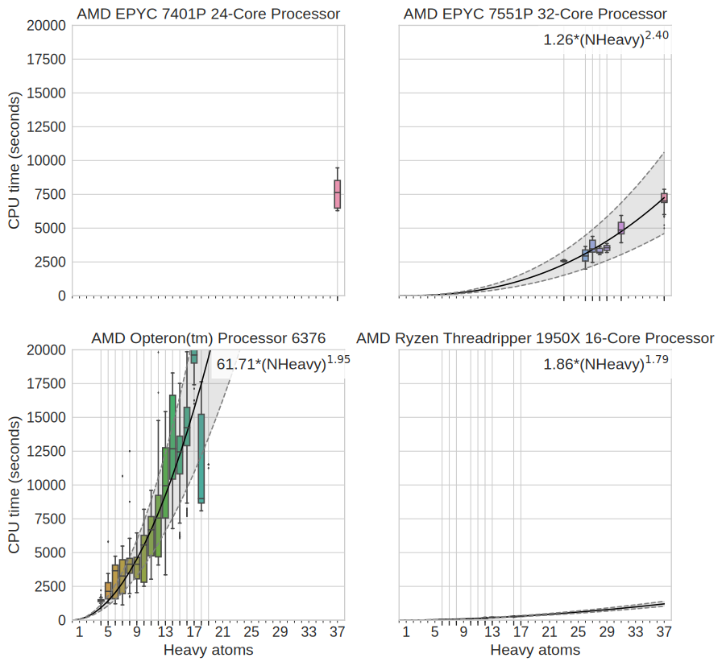

Chaya D Stern 0000-0001-6200-3993 · ChayaSt · SternChaya Tri-Insitutional PhD Program in Chemical Biology, Memorial Sloan Kettering Cancer Center, New York, New York 10065, USA; Computational and Systems Biology Program, Memorial Sloan Kettering Cancer Center, New York, New York 10065 USA · Funded by Grant XXXXXXXX
Christopher I Bayly XXXX-XXXX-XXXX-XXXX · johndoe · johndoe Department of Something, University of Whatever · Funded by Grant XXXXXXXX
Daniel G A Smith 0000-0001-8626-0900 · dgasmith · dga_smith The Molecular Sciences Software Institute, Blacksburg, Virginia 24060 USA · Funded by Grant XXXXXXXX
John D Chodera 0000-0003-0542-119X · jchodera · jchodera Computational and Systems Biology Program, Memorial Sloan Kettering Cancer Center, New York, New York 10065 USA · Funded by Grant XXXXXXXX
Abstract
Accurate molecular mechanics force fields for small moelcules are essential for predicting protein-ligand binding affinities in drug discovery and understanding the biophysics of biomolecular systems. The accuracy of torsion parameters is important for determining the conformational distribution of molecules, and can have a large effect on computed properties like binding affinities. Torsion parameters are usually fit to computationally costly quantum chemical (QC) torsion scans that scale poorly with molecule size. To reduce computational cost and avoid the complications of distant intramolecular interactions, molecules are generally fragmented into smaller entities to carry out QC torsion scans. Poor fragmentation schemes, however, have the potential to significantly disrupt electronic properties of the region around the torsion, leading to poor representation of the real chemical environment and the resulting torsion energy profile. Here, we show that a rapidly computable quantity, the fractional Wiberg bond order (WBO), is sensitive to the chemical environment of bonds, and can be used as a useful surrogate to assess the robustness of fragmentation schemes and identify conjugated bond sets. We use this concept to construct a validation set consisting of exhaustive fragmentations of druglike organic molecules (and their corresponding WBO distributions derived from accessible conformations) that can be used to evaluate fragmentation schemes. To illustrate the utility of the WBO in assessing fragmentation schemes that preserve the chemical environment, we propose a new fragmentation scheme that uses rapidly-computable AM1 WBOs, available essentially for free as part of an AM1-BCC partial charge assignment process, to maximize the chemical equivalency of the fragment and the substructure in the larger molecule.
1. Introduction
Molecular mechanics (MM) small molecule force fields are essential to the molecular design for chemical biology and drug discovery, as well as the use of molecular simulation to understand the behavior of biomolecular systems. However, small molecule force fields have lagged behind protein force fields given the larger chemical space these force fields must cover to provide good accuracy over the space fo druglike ligands, common metabolites and other small biomolecules [1,2]. Torsion parameters are particularly problematic because historical approaches to their determination tend to produce parameters that generalize poorly [3]. This lack of generalizability has let many practitioners to aim to improve the force field accuracy by refitting torsion parameters for individual molecules in a semi automated bespoke fashion [4,5,6]. This leads to a significant barrier to setting up simulations for new projects and may not produce generalizable parameters.
In many molecular mechanics force fields (e.g., Amber [7], CHARMM [8], OPLS [9]) a low-order Fourier series, such as a cosine series, is often used to represent the contribution of torsion terms to the potential energy.
where \(V_i\) is the torsion force constant which determines the amplitudes, \(n\) is the multiplicity which determines the number of minimas, and \(\gamma\) is the phase angle which is sometimes set to \(0^{\circ}\) or \(180^{\circ}\) to enforce symmetry around zero. In most force fields \(N\) is 4, however, some go up to 7. The torsion potential energy parameters such as amplitudes and phase angles for each Fourier term, are generally fit to the residual difference between gas phase quantum chemistry (QC) torsion energy profile and the non-torsion MM parameters [10]. The QC torsion energy profile is generated by fixing the torsion atoms and geometry minimizing all other atomic positions. Neighboring torsions can have correlated conformational preferences the low-order Fourier series does not capture[11]. 2D spline fits, such as CMAP [12,13], have become a popular way to model non-local correlations by fitting residuals between the 2D QC torsion energy profile and the 2D MM torsion energy profile.
In order to produce a quantum chemical energy profile representing the chemical environment that the torsion of interest is to be fit to, the quantum chemical torsion profile is generally computed on smaller fragments generated by a fragmentation-and-capping process for two main reasons.
Figure 1:Fragmenting molecules is necessary to avoid high computational cost of generating QC data.[A] CPU time (wall time * nthreads) of one QC gradient evaluation at B3LYP-D3(BJ)/DZVP level of theory [14,15] vs number of heavy atoms in molecules. All computations shown here were run on an Intel(R) Xeon(R) CPU E5-2697 v4 @ 2.30GHz. Empirically, gradient evaluations grow as \(O(N^{2.6})\) where \(N\) is the number of heavy atoms. The scaling is similar on other processors shown in SI Figures 14 & 15. The black curves shows a power law fit to the data, and the grey is the 95% CI of the curve estimate. [B] Smoothed histogram of heavy atoms in small molecules from DrugBank. The average druglike molecules has 25 heavy atoms.
Computational efforts scale poorly with molecule size. Generating one dimensional QC torsion profiles are computationally expensive and become increasingly inefficient for larger molecules and/or higher dimensional QC torsion profiles. QC calculations scale poorly with the number of basis sets \(N\), like \(O(N^M)\) where formally, \(M\leq 4\) for hybrid DFT. With modern implementations, hybrid DFT scales asymptotically as \(~N^{2.2-2.3}\)[16]. Using QCArchive data [17], we found that practically, hybrid DFT grows like \(~N^{2.6}\) for the DZVP basis as shown for gradient evaluations in Figure 1, A. To achieve good sampling to adequately fit the torsions, constrained geometry optimizations need to be calculated at \(\leq 15^0\) intervals for a minimum of 24 constrained geometry optimizations. To avoid hysteresis in the energy profile due to orthogonal degrees of freedom [18], methods like wavefront propagation [hold for CITE torsiondrive paper] are used. This adds a factor of 2D, where D is the dimension of the QC scan, to the computational cost. We found (SI Figure 17) that on average ~60 optimizations are needed for a 1D wavefront propagated torsion drive to converge. We also found that roughly 20 gradient evaluations are needed for an optimization to to converge for the molecules we optimized (SI Figure 16). Figure 1, B shows a smoothed histogram of the distribution of the number of heavy atoms in FDA approved small molecules taken from DrugBank [19]. For an average druglike molecule of 25 heavy atoms, we can estimate the cost of a 1D torsion scan to be \(60 * 20 * 0.26 * 25^{2.6} \approx 1,000,000\) CPU seconds. Reducing the size of the molecule to 15 heavy atoms will reduce the cost the torsion scan by an order of magnitude (\(60 * 20 * 0.26 * 15^{2.6} \approx 300,000\) CPU seconds)
Intramolecular interactions complicate torsion drives and torsion parameter fitting In larger molecules, there is a greater potential for the torsion atoms to interact with other degrees of freedom and convolute the energy profile. While this can also happen in smaller molecules such as ethylene glycol [hold to CITE torsiondrive paper] this problem is reduced when a minimal model molecule is used, albeit not completely eliminated.
While a number of algorithms for fragmenting large molecules into smaller molecular fragments have been previously proposed, few are appropriate for the purpose of generating high-quality torsion scans. Many of these algorithms fall into two categories: 1. fragmentation for synthetic accessibility [20,21,22] and 2. fragmenting molecules to achieve linear scaling for QC calculations [23,24,25,26]. Fragmentation schemes for synthetic accessibility find building blocks for combinatorial and fragment based drug design. Cleavage happens at points where it makes sense for chemical reactions and do not consider how those cuts affect the electronic properties of the fragments. For retrosynthetic applications, many cleavage points are at functional groups because those are the reactive sites of molecules. However, for our application, we especially do not want to fragment at these reactive points given how electron rich they are and how much the electronic density changes when they are altered. Fragmentation algorithms for linear scaling such as Divide-and-Conquer methods [27], effective fragment potential method [28] and systematic molecular fragmentation methods [26] require the users to manually specify where the cuts should be or which bonds not to fragment. Furthermore, besides the scheme suggested by Rai et. al. [29], none of these methods address the needs specific to fragmenting molecules for QC torsion scans. Fragments need to include all atoms involved in 1-4 interactions, since they are incorporated in the fitting procedure. We also need a systematic way to determine if remote substituents change the barrier to rotation significantly for the central bond of interest.
In this work, we use the Wiberg Bond Order (WBO) [30], which is both simple to calculate from semi-empirical QC methods and is sensitive to the chemical environment around a bond. WBOs quantify electron population overlap between bonds, or the degree of binding between atoms. Bond orders are correlated with bond vibrational frequencies [31,32] and WBOs are used to predict trigger bonds in high energy-density material because it is correlated with the strength of the bond [33]. Wei, et. al. [34] have shown that simple rules for electron richness of aromatic systems in biaryls are good indication of torsion force constants (specifically for V2), however, this measure was only developed for biaryls and it does not take into account substituents beyond the aromatic ring directly adjacent to the bond. Here, we develop an approach that uses the WBO to validate whether a fragmentation scheme corrupts the local chemical environment of interest, with a particular focus on fragmentation schemes suitable for QC torsion drives. Our approach uses simple heuristics to arrive at a minimal fragment for QM torsion scan that is representative of of the torsion scan of the substructure in the parent molecules. For a central bond, include all atoms that are involved in the sterics of a torsion scan. Then use the WBO as a surrogate signal to determine if the fragment needs to be grown out more to restore the correct electronics around the central bonds.
The paper is organizes as follows: Section 2 provides a mathematical and physical definition of the problem. Section 3 provides the motivation for using the WBO as a surrogate, evaluates how robust it is, proposes a minimal fragmentation scheme and describes a rich validation set that can be used to benchmark fragmentation schemes Section 4 provides a discussion of the implications of this study and section 5 provides detailed methods.
2. Theory and definitions
2.1 A mathematical definition of the problem
A molecular structure can be modeled as a degree bounded graph \(G = (V, E)\) where \(V\) are the nodes and \(E\) are the edges. In a molecular graph, the nodes correspond to the atoms and the bonds correspond to the edges. We define rotatable bonds as a set bonds in the molecule that are not in rings, \(\mathcal{E} \subset E\), and \(\mathcal{G}\) as a set of allowable subgraphs, where each subgraph \(G'(V', E') \in \mathcal{G}\) is built around a central, rotatable bond, \(e' \in \mathcal{E}\) with the following conditions:
The number of atoms in \(G'\), \(|V'|\), are \(4 \leq |V'| \leq |V|\)
The minimum edges in \(G'\) are \(e'\) and all \(e \in E\) such that \(e, e'\) share a vertex
All \(v \in V\) adjacent to \(e\)
If \(v \in V'\) is in a ring in \(G\), the ring should be included in \(G'\)
The weights on \(e'\) are given by \(\delta(e'; G')\) where \(\delta\) is the RMSE of the torsion potential around the central, rotatable bond in the full graph vs. a subgraph. Since \(\delta(e'; G')\) is computationally expensive, we use a surrogate, \(\gamma(e'; G')\), which we define as the difference of the WBO on the central, rotatable bond \(e'\) in \(G'\) and in the full graph \(G\). In order to calculate the WBO, we need to cap open valences. The rule we use are defined in section 3.4.
We want to minimize \(\gamma(e'; G')\), while also minimizing the cost of each subgraph. We define the cost as estimated in 1
The search space of \(\mathcal G\) for each rotatable bond is combinatorial and its upper bound is \({|V|\choose{4}} + {|V|\choose{5}} + ... {|V|\choose{|V|}}\) since all \(G' \in \mathcal G\) need to be connected and rings are not fragmented. To reduce the search space, we also define a list of functional groups that should not be fragmented in 2.
Given how large the search space can become, we use several heuristics as described in section 3.4.
2.2 Physical definitions
The torsion energy function (or profile) of a bond is determined by a combination of effects from conjugation, hyperconjugation, sterics and electrostatics [34,35,36,37]. Most of these effects are non-local. For this study we define local as atoms within two bonds of the central bond of a torsion and remote as any atom beyond those two bonds.
Sterics and elecrostatics are in principle handled by non bonded terms in most force fields, so a torsion profile should represent conjugation or hyperconjugation, and only the 1-4 electrostatics. Using small fragments to generate QC torsion profiles reduces non-local electrostatics and steric interactions from convoluting the data. However, conjugation and hyperconjugation are non local properties and remote chemical changes can influence the extent of conjugation and / or hyperconjugation. In this study, we aim to mitigate the effects of remote chemical changes on conjugation and hyperconjugation by understanding how the strength of the central bond changes with remote chemical changes. Here we define conjugation and hyperconjugation and how we use these terms in this paper.
Conjugation and hyperconjugation describes the sharing of electron density across several bonds. Conjugation is formally defined as the overlap of p-orbital electrons across \(\sigma\) bonds [38,39] such as what occurs in benzene or butadiene. Hyperconjugation is the interactions of electrons in a donating bonding orbital to an anti-bonding orbital [40]. There are several modes of hyperconjugation such as \(\sigma \to \sigma^*\), \(\sigma \to \pi^*\), and \(\pi \to \sigma^*\). In this study, for simplicity, we use the term conjugation to refer to all modes of conjugation and hyperconjugation.
3. Results
3.1 Torsion energy barriers are sensitive to the chemical environment, which can be influenced by remote substituents
In most forcefields, torsions are defined by the quartet of atom types involved in the dihedral [41,7,8,9]. However, the quartet of atom types do not always capture the relevant chemistry, especially when the effects are non local i.e., atoms contributing to hyperconjugation, delocalization or other non classical effects, are not part of the quartet involved in the torsion [3]. Figure 2, A illustrates such a case with a series of biphenyls in different protonation states. While the MM torsion profiles are all the same (2 D), the QC torsion profiles are different for each protonation state (2 E). The torsion energy barrier increases relative to the neutral state for the cation, anion and zwitterion, in that order. The profile changes qualitatively as well. For the neutral molecule, the lowest energy conformer is slighlty out of plane, at \(150^{\circ}\) and \(120^{\circ}\). For the zwitterion, the lowest energy conformer is at \(180^{\circ}\). In the neutral molecule, the slightly out of plane conformer is preferred to accommodate the hydrogens. However, the central bond in the zwitterion is part of the larger conjugated system between the two aromatic rings (2 B) so the planar conformer is preferred to enable conjugation.
This trend poses several problems to automatic forcefield parametrization. Most forcefields consider the central bond in the zwitterion rotatable which is reflected in the same torsion parameters for all four molecules (2, D) while the QC scan clearly shows that it is not. This illustrates one of the fundamental limits of atom types in classical forcefields. At what point in this series should a new atom type be introduced? The Open Force Field Initiative’s effort on automating data driven direct chemical perception [1,42,43] addresses this problem by using SMIRKS patterns to assign parameters, and providing a framework to sample over SMIRKS space in a data driven way. In addition, this example illustrates why fragmenting molecules appropriately for QC torsion scans requires human expertise and is difficult to automate. In this case, a small change three bonds away from the torsion central bond changed the bond from a rotatable bond to a non-rotatable conjugated bond. When fragmenting molecules, we need to avoid destroying a bond’s chemical environment by naively removing an important remote substituent.
Figure 2:Torsion profiles can be sensitive to remote substituents changes in a molecule[A] Biphenyl protonation states and tautomers with increasing Wiberg bond order for the central bond. [B] The resonance structure of the biphenyl zwitterion shows that the central bond is conjugated. The Wiberg bond order and torsion scan for this bond (see A and C) are reflective of a conjugated bond. [C] Relative QC energy as a function of torsion angle of the central bond computed via QCArchive at B3LYP-D3(BJ) / DZVP level of theory. The colors of the QC scan corresponds to the highlighted bonds in A. [D] Same as C but using MM energy computed via the openff-1.0.0 force field. [E] Torsion barrier heights vs WBOs. The color of the data points correspond to the highlighted bonds in A. The QC torsion barrier height scales linearly with the WBO.
3.2 The Wiberg Bond Order quantifies the electronic population overlap between two atoms and captures bond conjugation
The Wiberg bond order (WBO) is a bond property that is calculated using atomic orbitals (AOs) that are used as basis sets in quantum and semi-empirical methods[44]. WBOs originally started with the CNDO formalism [30], but has been extended to other semi-empirical methods such as AM1 [45] and PM3 [46]. The WBO is a measure of electron density between two atoms in a bond and is given by the quadratic sum of the density matrix elements over occupied atomic orbitals on atoms A and B
For quantum chemistry, AOs are often non-orthogonal and require normalization for the WBO to be valid. In the case of WBOs in Psi4 [47] the Löwdin normalization [48,49] scheme is used. For the practical purposes of this paper, the Wiberg and Wiberg-Löwdin schemes are identical and will be described as “WBO”s for both semi-empirical and quantum chemistry methods.
We calculated the WBO from AM1 calculations for the biphenyl series as shown in figure 2 A. The increase in the WBO corresponds to increasing conjugation and torsion energy barrier height of the bond. When the torsion energy barrier heights are plotted against the WBO (fig 2 E), the relationship is linear with an \(r^2\) of 0.97.
3.3 The WBO is an inexpensive surrogate for the chemical environment around a bond
Since the WBO can be calculated from a cheap AM1 calculation, is indicative of a bond’s conjugation, and is correlated with torsion energy barrier height, it is an attractive measure to use as a surrogate when automating fragmentation or interpolating torsion force constants. However, WBOs are conformational dependent [50,51] so we investigated this dependence to understand if WBOs will be a robust descriptor. In addition, we also investigated the generality of the torsion energy barrier and WBO linear relationship. In this section we will first discuss our findings and solution to the conformational dependency and then discuss how general the linear relationship is.
3.3.1 Conformation dependent variance of WBOs are higher for conjugated bonds
Since WBOs are a function of the electronic density, which is conformational dependent, WBOs change with conformation. However, not all bonds’ WBOs change the same way with conformation. We found that WBOs for conjugated bonds have higher variance with respect to conformation and that bonds involved in conjugated systems have WBOs that are correlated with each other.
Figure 3:Variance and correlations of Wiberg bond order distributions with respect to conformations are higher for conjugated bonds[A] Gefitinib, with its rotatable bonds highlighted and numbered to correspond with figures B and C. [B] WBO distributions over 232 conformations of the highlighted, rotatable bonds. The colors of the distributions correspond to the colors in the highlighted bonds in A. The variance and their 95% confidence interval are shown on the left (with exponent base of 1E-5). The single non conjugated bonds (blue, (10, 11), red (11, 12), and olive (12, 13)) have lower variance than conjugated bonds (yellow (3, 2), purple (8, 9), orange (9, 10), grey (23, 19), and green(24, 24)). [C] Correlation plot of WBOs every bond in Gefitinib against WBOs of all other bonds over 232 conformations. The white lines indicate ring systems. Bonds in conjugated systems have higher correlations between their WBOs (see the aromatic ring systems in the two lower right diagonal squares). Both bonds (23, 19) (grey) and (24, 23) (green) have WBOs that are correlated with their neighboring ring systems, but bond (23, 19) are more correlated with the ring systems than the green bond (24, 23). [D] Resonance structures of Gefitinib illustrate why the grey bond (23, 19) has higher variance than the green bond (24, 23) even if both bonds are conjugated. When the double bond is on bond (23, 19), the negative charge is on a nitrogen which is the more stable form, vs the resonance structure where the double bond is on (24, 23) with the negative charge on a carbon. [E] The conformations of the molecule for the highest WBO and lowest in the distribution. The mode with higher WBOs has bond (23, 19) in plane with quinazoline which allows for stronger conjugation while the mode with lower WBOs has the bond out of plane so there is less electron population overlap in out of plane conformation.
To investigate how WBOs change with conformation, we used Omega [52] to generate conformers for a set of kinase inhibitors (SI Figure 18) and calculated the WBO for each conformation from a B3LYP-D3(BJ) / DZVP [14,15,53,54] geometry optimized calculation using Psi4 [47]. Omega is a knowledge-based conformer generator that uses a modified version of MMFF94s [55] to score conformations. It has been shown to accurately reproduce experimentally observed crystallography conformers in the Platinum benchmark dataset [56]. Figure 3 illustrates the results for Gefitinib (3, A), a representative molecule. Figure 3, B shows the distribution of WBOs for all rotatable bonds color coded with the colors used to highlight the bonds in Gefitinib (3, A). Single carbon-carbon bonds, and carbon-nitrogen bonds formed by atoms numbered 10 - 13 are freely rotating. This is reflected by the tighter distribution (lower variance) of WBOs around closer to one for those bonds. The bonds involving the ether oxygens and aromatic rings (formed by atoms numbered 1-3, 8-10, 19, 23-24) exhibit higher variance. It is interesting to note the difference in the WBOs for the conjugated bonds formed by the nitrogen between the quinazoline and chloro fluro phenyl (bonds formed by atoms numbered 19, 23 and 23, 24). Both of these bonds are conjugated with their neighboring ring systems, however, While the distribution of WBOs for bond 23-19 (the grey distribution) has two modes clear modes of almost equal weights, the WBO distribution for bond 24-23 has lower variance. This is in agreement with the resonance structures shown in figure 3. The resonance strictures that have the double bond on the bond closer to the quinazoline (bond 19-23) are more stable because the negative charge is on a nitrogen. When the double bond is on the neighboring 23-24 bond, the negative charge is on an aromatic carbon which is less stable. The results are similar for other kinase inhibitors tested shown in SI Figure 18. In addition, when we inspected the conformations associated with the highest and lowest WBO in the grey distribution (fig 3, E) we found that conformations with lowest WBO on bond 19-23 had that bond out of plane while the conformation with the highest WBO value had the bond in plane which allows conjugation. We found similar results from WBOs calculated form QC torsion scans. Fig 6 shows the WBO for each point in the QC corresponding torsion scans. The WBOs are anti-correlated with the torsion potential energy which is in line with chemical intuition. Conjugation stabilizes conformations and leads to more electronic population overlap in bonds [32]. At higher energy conformers, the aromatic rings are out of plan and cannot conjugate. Therefore the WBO is lower for those conformers. At lower energy conformations, the rings are in plane and can conjugate so the WBO is higher. We found that the trends discusses above are similar when using semi-empirical methods such as AM1 (SI Figure 19).
3.3.2 Bonds in conjugated systems have highly correlated conformation-dependent WBOs
We found that certain bond orders are strongly correlated or anti-correlated with each other, indicating strong electronic coupling. As bonds in one conformation gain electron population overlap, the coupled bonds will decrease in electron population overlap and vice versa. Figure 3 C shows the Pearson correlation coefficient for each bond WBO distribution against all other bond WBO distributions. There is a clear structure in this correlation plot. The square formed by bonds from atoms 24-29 shows that the alternating bonds in the aromatic ring (25-29) are strongly anti-correlated with each other. This trend is different in the ring formed by atoms 13-18 which is not aromatic. In this ring, bonds 13-18, 13-14, 16-15 and 16-17 (which involve electron rich atoms O and N) have Pearson correlation coefficients with absolute values higher than for the other bonds in the ring, but lower than the bonds in the aromtic ring. The bonds involved in the methoxy groups (atoms 1-3 and 8-10) are correlated with each other and also correlated to the quinazoline, albeit not as strongly. And the bonds between the chloro fluoro phenyl and quinazoline follow the same trend as their WBO distribution and resonance structures. The bond closer to the quinazoline (bond 23-19) has WBO distribution correlated with the quinazoline while the bond closer to the chloro fluoro phenyl (bond 23-24) is not as strongly coupled with the quinazoline. The trends are similar for other kinase inhibitors tested as shown in SI Figure 18.
3.3.3 Electronically least-interacting functional group (ELF) method provides a useful way to capture informative conformation-independent WBOs
Figure 4:Standard deviations of conformation-dependent WBO distributions are smaller than standard deviations of WBO distribution of the same bond in different chemical environments The distribution of standard deviations of WBO distributions over conformations is shown in blue. The distribution of standard deviations of ELF10 WBO distributions for the same bond in different chemical environments is shown in pink. The changes in WBO due to conformations are smaller than the changes in WBO due to chemical changes around the bond. The validation set (SI 27), was used to generate these distributions. The blue sandard deviation distribution was calculated over 140602 WBO dependent distributions (this is the number of individual fragments in the dataset). The pink standard deviation distribution was calculated over 366 distributions of 366 bonds in different chemical environments (of the 140602 fragments)
As we have shown, the WBO is conformation dependent and this dependency can also be highly informative of the electronic coupling in a system. Figure 4 shows the distribution of standard deviations of WBO distributions with respect to conformation in blue. Most of the standard deviations fall below 0.03, which is encouragingly small. However, it can become computationally expensive to calculate the WBO for all conformations. If we want to use WBOs as a surrogate to determine if our fragment is representative of the parent molecule in a reproducible way, we need a way to capture informative conformation-independent WBOs. Electronically Least-interacting Functional groups (ELF) conformation selection implemented in quacpac [57] resolves the issue of sensitivity of molecular mechanics electrostatic energies from QM derived charges.
The ELF10 method begins with a large set of conformers for the molecule. MMFF94 charges are assigned to the molecule, set to their absolute value, and then single-point Coulomb electrostatic energies evaluated for each conformer. The lowest-energy 2% of conformers are selected, and if there are more than 10, from these the most diverse 10 are selected. For this final conformer set (up to 10 conformers), the AM1 WBOs and charges for each conformer are averaged (by bond and by atom, respectively) and the BCCs are applied to the charges [58]. This method yields a set of AM1-BCC atomic partial charges and WBOs for the molecule which are relatively insensitive to the initial choice of conformer set, and which mitigate two pathologies of AM1-BCC charges: peculiar charges resulting from strong intramolecular electrostatic interactions (e.g. from internal hydrogen bonds or formal charges) and simple conformational variance.
Figure 5:Distribution of WBO in drug-like molecules have peaks at expected values[A] The distribution of all WBOs for all bonds in molecules in set. The peak at one, close to two and close to thres correspond to single, double and triple bonds. the density between one and two correspond to aromatic and conjugated bonds. The peak at ~0.7 correspond to bonds that include sulfur and phosphorous which are longer, weaker bonds. [B] The blue distribution includes carbon - carbon bonds that are not in rings. The peaks at one, two and three correspond to single, double and triple bonds. The pink distribution include bonds that are in rings. The peak at one corresponds to single bonds and the density between one and 1.5 are aromatics. [C] The blue distribution includes bonds that have either one or two nitrogen. Many of these bonds are conjugated as demonstrated by the density around 1.5. The density at three corresponds to nitriles. The pink distribution include bonds that have oxygens. The peak at two corresponds to carbonyls.
This method can also be applied to derive WBOs that are insensitive to conformers. To check how well ELF10 estimated \(W_{AB}\) recapitulates the multiplicity of bonds, we calculated \(W_{AB}\) from AM1 ELF10 calculations for all bonds in a set of molecules shown in SI Figure 20. The distribution in figure 5 corresponds closely with bond multiplicity. The density at ~ 0.7 correspond bonds involving sulfur and phosphorous since these are weaker and longer bonds. The peak at 1.0 corresponds to C-H and C-C bonds, the peak close to 1.5 corresponds to bonds in aromatic rings, the peak close to 2.0 corresponds to double bonds, and finally the triple bonds form the last peak. Figures 5 B and D seperate out different kinds of bonds to more clearly illustrate what the WBO captures. Figure 5 B shows carbon - carbon bonds not in rings (blue) and bonds in rings (pink). The carbon - carbon distribution has distinct peaks at one, two and three corresponding to single, double and triple bonds. There is also a smaller peak at 1.5 that corresponds to conjugated bonds. The pink distribution includes bonds in rings and has a peak at one and 1.5 which corresponds to aliphatic and aromatic rings, respectively. Figure 5 D shows distrbutions with bonds that have nitrogens (blue) and oxygens (pink). The peaks occur at the expected values; 1, 1.5 and 3 for nitrogen which corresponds to single, conjugated and triple bonds and 1 and 2 for oxygens which correspond to single and carbonyl bonds. For the rest of this section we will be focusing on the robustness and generalizability of ELF10 WBOs.
3.3.4 WBOs are a robust signal of how torsion barrier heights depend on remote chemical changes.
To investigate how resonance and electronic effects from remote substituents change the torsion energy of a bond, we took inspiration from the Hammett equation [59] of reactions involving benzoic acid derivatives. The Hammett equation relates meta and para benzoic acid substituents to the acid’s ionization equilibrium constants
Where \(\sigma\) is a substituent constant and \(\rho\) is a reaction constant. It aims to isolate the resonance and inductive effects of substituents from the sterics effects of a reaction. Here, we generated a combinatorial set of meta and para subsituted phenyls and pyridine [???] A with 26 functional groups that cover a wide range of electron donating and withdrawing groups. (details on generating and accessing this set is in section 5.3.2 in detailed methods) We then calculated the ELF10 WBO for the bond attaching the functional group to the aromatic ring (highlighted green in Figure [???] A) for all functional groups which resulted in 133 (26 * 5 + 3) data points for each functional group. This allowed us to isolate the effect on a bond’s WBO from remote chemical environment changes, defined as a change more than two bonds away, from other effects such as sterics and conformations. The resulting distributions are in figure [???], B. It is interesting to note that the trend of decreasing WBOs for more electron donating groups are anti correlates with increasing Hammett substituent constants. In SI Figure 21, the AM1 ELF10 WBO of the bond between the functional group and benzoic acid is plotted against their Hammett meta and para substituent constants (values were taken from Hansch et al. [60]). Functional groups that are more electron donating will have more electron density on the bond attaching the functional group to the benzoic acid. The resonance and/or inductive effect destabilize the benzoate, increases its pKa, which corresponds to lower substituent constants.
![AM1 ELF10 Wiberg bond orders correlate with torsion barrier heights in related molecules[A] Systems and functional groups used in the subsituted phenyl set. The functional groups were chosen to span a large range of electron donating and withdrawing groups. [B] AM1 ELF10 WBO distributions for the bond between the phenyl ring and X1 in different chemical environments [C] Selected QC torsion scan barrier heights vs AM1 ELF10 WBOs. These lines all had \(r^2\) greater than 0.7. [D] Same as C but these series did not fit the lines as well (\(r^2\) less than 0.7). (images/substituted_phenyls.svg){#fig:subsituted_phenyls}
Table 1: slope and associated statistics for torsion barrier height vs WBO for selected functional groups
X1
slope
standard error
\(r^2\) and 95% CI
N(Me)2
116.92
14.35
0.880.730.98
NHMe
134.52
16.19
0.90\(_{0.83}^{0.98}\)
NH2
64.27
20.76
0.58\(_{0.06}^{0.95}\)
NHEt
119.51
19.98
0.84\(_{0.61}^{0.98}\)
NH(C3H7)
163.76
23.81
0.87\(_{0.73}^{0.99}\)
OH
154.82
35.67
0.73\(_{0.26}^{0.98}\)
OMe
185.31
41.33
0.80\(_{0.46}^{0.99}\)
OEt
119.66
47.12
0.48\(_{0.07}^{0.88}\)
NHCON(Me)2
159.31
47.98
0.58\(_{0.23}^{0.95}\)
NHCONHMe
127.65
55.03
0.43\(_{0.04}^{0.95}\)
NHCONH2
238.12
54.12
0.73\(_{0.41}^{0.98}\)
NHCOEt
205.80
51.80
0.69\(_{0.31}^{0.99}\)
NHCOMe
144.32
64.12
0.46\(_{0.02}^{0.99}\)
OCONH2
172.72
84.85
0.51\(_{0.03}^{0.98}\)
COOH
267.23
91.46
0.74\(_{0.04}^{1.0}\)
COOEt
149.01
63.23
0.58\(_{0.13}^{1.0}\)
NO2
302.07
47.74
0.91\(_{79}^{1.0}\)
To investigate how these long range effects observed in the WBOs capture changes in the bonds’ torsion potential energy, we ran representative QC torsion scans for 17 of the functional groups (SI Figures 22 - 26). We did not run QC torsion scans for functional groups that either did not have a torsion such as halogens, were congested such as trimethyl amonium and functional groups where the WBOs did not change by more than 0.01 for different functional groups at the meta or para position such as methyl. We chose the representative molecules for the 17 functional groups by sorting them by their WBO and selecting molecules with minimum WBO difference of 0.02. All of the resulting QC torsion scans are shown in SI Figures 22 - 26. We show a representative series of torsion scan for the nitro functional group in figure 6A. The torsion energy barrier height increase with increasing ELF10 WBO of the bond. In addition, 6B shows that the Wiberg-Lowdin bond orders are anti-correlated with the QC torsion scan which is the same result we saw for the initial bipheynl set discussed in the previous section. We also found that the linear relationship between WBOs and torsion energy barrier height shown in Figures 2, E generalizes to the functional groups tested in this set (Figure {[???]} C and D). However, some X1 we tested do not fully follow the trend so we separated the lines into Figure [???] C for X1 that have lines with \(r^2\) > 0.7 and Figure [???] D for X1 that have lines with \(r^2\) < 0.7. Table 1 lists the slopes and associated statistics for the fitted lines.
Figure 6:Wiberg bond orders are anti correlated with QC torsion scans[A] QC torsions for methylamino in series of different chemical environment. Barrier heights increase with increasing AM1 ELF10 WBOs [B] Wiberg bond orders calculated at each point in the QC torsion scan using the same level of theory. The bond orders are anti correlated with QC torsion scans [C] QC scans for urea in a series of different chemical environment. Both profiles and energy barriers change with AM1 ELF10 WBOs [D] Wiberg bond orders are not perfectly anti correlated to QC scans
For most functional groups, the change in WBOs correspond to changes in torsion barrier heights (SI Figures 22 - 26). However, for some functional groups, the change in WBO does not fully capture the differences in torsion scans because not only do the torsion energy barrier heights increase, but the profile changes considerably. as shown in 6C for urea. Interestingly, the Wiberg bond order scans do have the same profiles 6 D. These phenomena and the discrepancies observed in Figure [???] D, are discussed in more detail in section 4.3 in the discussion.
When we compare the standard deviations of WBO distributions with respect to conformation versus with respect to changes in chemical space (figure 4, pink distribution), we find that the changes in ELF10 WBO for remote chemical environment changes are usually bigger than the changes in WBO that arise from change in conformation. This allows us to use the difference in ELF10 WBO of parent and fragment as a good surrogate to the level of disruption of the chemical environment.
3.4 A simple fragmentation scheme can use the WBO to preserve the chemical environment around a torsion
Figure 7:Illustration of fragmentation scheme using WBOs First, we find the rotatable bonds and calculate their ELF10 WBOs. Then, for each rotatable bond, we find the minimal fragment as described in the text. Then we calculate WBOs for the bonds around which the minimal fragments were generated and check if the new WBO is within the distruption threshold relative to the parent’s WBO. If the absolute difference is greater than the disruption threshold, substituents are added, one at a time, and the WBO is recalculated. The fragment continues to grow until the central bond’s WBO is within the disruption threshold of the WBO of the bond in the parent molecule
The WBO is a robust indicator of changes in torsion energy barrier heights for related torsions. Therefore, if a fragment’s WBO changes too much from its parent WBO at the same bond, the fragmentation is probably inadequate. Using this concept, we extended the fragment-and-cap scheme (with slight changes) proposed by [29] by considering resonance via WBOs. The scheme, illustrated in figure 7 is as follows:
Find acyclic bond. For this step we use the SMARTS pattern [!$(*#*)&!D1]-,=;!@[!$(*#*)&!D1].
Keep the four atoms in the torsion quartet and all atoms bonded to those atoms (this ensures that all 1-5 atoms are included in the minimal fragment).
If any of the atoms are part of a ring or functional group shown in table 2, include ring and functional groups atoms to avoid ring breaking and fragmenting functional groups that contain more than one heteroatom.
Keep ortho substitutents to the rotatable bond and the bonds directly bonded to the rotatable bond it is involved in the sterics of the torsion. This rule is slightly different than described in [29].
N, O and S are capped with methyl. All other open valence atoms are capped with hydrogen.
Calculate WBO for fragment.
If the fragment’s WBO differs by more than a user defined threshold, continue grow out one bond at a time until the fragment’s WBO is within the threshold of the parent WBO.
Table 2:Functional groups that are not fragmented. This list is not comprehensive as it only includes functional groups that were present in the validation set. Users can add their own functional groups they do not want to fragment
Chemical group
SMARTS pattern
azo
[NX3][N]=
nitric oxide
[N]-[O]
amide
[#7][#6](=[#8]), [#7][#6](-[O-])
urea
[NX3][CX3](=[OX1])[NX3]
aldehyde
[CX3H1](=O)[#6]
sulfoxide
[#16X3]=[OX1], [#16X3+][OX1-]
sulfonyl
[#16X4](=[OX1])=([OX1])
sulfinic acid
[#16X3](=[OX1])[OX2H,OX1H0-]
sulfinamide
[#16X4](=[OX1])=([OX1])([NX3R0])
sulfonic acid
[#16X4](=[OX1])(=[OX1])[OX2H,OX1H0-]
phosphine oxide
[PX4](=[OX1])([#6])([#6])([#6])
phosphonate
P(=[OX1])([OX2H,OX1-])([OX2H,OX1-])
phosphate
[PX4](=[OX1])([#8])([#8])([#8])
carboxylic acid
[CX3](=O)[OX1H0-,OX2H1]
nitro
([NX3+](=O)[O-]), ([NX3](=O)=O)
ester
[CX3](=O)[OX2H0]
(Add discussion on the changes I made to the Pfizer scheme for our minimal fragment before we start building out and why. Add SI figure justifying it)
3.5 Fragmentation schemes can be assessed by their ability to preserve the chemical environment while minimizing fragment size
This fragmentation scheme improves upon [29], however, it leaves some parameters up to the user. In order to asses various thresholds and different fragmentation schemes in general, we generated a diverse set of FDA-approved drug molecules that can be a useful validation set. The goal of this set was to find molecules that are challenging to fragment. In other words, molecules that have bonds that are sensitive to remote substituent changes. To find these molecules, we first filtered DrugBank (version 5.1.3 downloaded on 2019-06-06) [19] with the following criteria:
FDA approved small molecules
Largest ring size has less than 14 heavy atoms
Smallest ring size has at least 3 heavy atoms
Molecule has less than 10 rotatable bonds
Molecule must have at least one aromatic ring
Molecule has only one connnected component
This left us with 730 small molecules [hold for SI]. Charged molecules exacerbates remote substituent sensitivity and many molecules are in charged states at physiological pH. To ensure that our dataset is representative of drugs at physiological pH, we used the OpenEye EnumerateReasonableTautomers to generate tautomers that are highly populated at pH ~7.4. This tautomer enumeration extended the set to 1289 small molecules [hold for SI] We then generated all possible fragments of these molecules by using a combinatorial fragmentation scheme. In this scheme, every rotatable bond is fragmented and then all possible connected fragments are generated where the smallest fragment has 4 heavy atoms and the largest fragment is the parent molecule. This scheme generated ~300,000 fragments. For each fragment, Omega was used to generate conformers and the AM1 WBO was calculated for every bond in every conformer. This resulted in a distribution of WBOs for all bonds in all fragments. The resulting dataset is very rich where exquisitely nuanced, long distance chemical changes are detected.
Figure 8:Changes in WBO distributions are a good indicator of remote substituent electronic effects[A] An illustrative example of the shift in the conformationally dependent WBO distributions due to crucial chemical changes such as the loss of Fluorine. The distributions are shaded with their corresponding distance score shown in the colorbar on the right. The parent molecule WBO distribution (numbered 4) is shaded red. Selected distributions are outlined and the corresponding fragments are shown in C. [B] Computational cost of fragment (\(heavy atoms^3\)) vs distance score (MMD) of the fragment indicates that it is possible to reduce teh cost of torsion scans without destroying the torsion profile. The black line is the Pareto frontier, or the cheapest fragment with the best score at that size. The selected fragment should be on the Pareto front at the lower left corner. [C] Selected fragments. Bonds are highlighted with their distance score. The ELF10 WBO is shown in the boxes above the highlighted bonds.
Figure 8 shows an example of the results of exhaustive fragmentation and how this data can be used to benchmark fragmentation schemes. All rotatable bonds in the parent molecule, Dabrafenib (8C 4) were fragmented into 11 fragments (in this example, the trimethyl was not fragmented) resulting in 108 connected fragments when all connected combinations were generated. Of those 108 fragments, 44 fragments contained the bond between the sulfur in the sulfonamide and phenyl ring highlighted in fragments in 8C. When the WBOs were calculated for all Omega generated conformers for each of the 44 fragments, the resulting WBO distributions clustered into 4 distinct bins (8A). Upon closer inspection we found that the shifts of the distributions corresponded to specific remote substituent changes, in this case the loss of fluorine and the phenyl ring bonded to the nitrogen in the sulfonamide. Here, these two changes cause the distributions to shift in opposite directions. While the loss of a fluorine on the phenyl bonded to the sulfure shifts the distribution to the right, the loss of the ring bonded to the nitrogen shifts the distributions to the left illustrating that the changes are multi dimensional. Fragments 2, 3, 4, and 6 (8C) all contain two fluorine and fall in the same cluster as the parent molecule, regardless if the rest of the molecule is included in the fragment. Fragments 7 and 9 only have one fluorine on the phenyl ring and both of their distributions are shifted to the right relative to the parent WBO distribution. Fragments 10 and 11 have no fluorine on the ring and are shifted to the right even more. Since removing the ring bonded to the nitrogen shifts the WBO distribution in the opposite direction, fragment 1, while having two fluorine, is shifted to the left of the parent distribution, fragment 5 WBO distribution overlaps with the parent WBO distribution even if it only has one fluorine, and fragment 8 is only shifted slightly to the right of the parent WBO distribution with no fluorine.
3.5.1 Scoring how well fragments preserve chemical environments using WBO distributions
Each fragment needs to be assigned a score of how well is preserves its parent chemical environment. To score each fragment, we compare the conformer dependent WBO distribution for a bond in a fragment against the WBO conformer-dependent distribution of the same bond in the parent molecule. To compare these distributions, we compute the maximum mean discrepancy [CITE] for the fragment distribution to the parent as follows:
where \(X\) is the parent WBO distribution and \(Y\) is the fragment WBO distribution. Including the squared mean incorporates the variance of the distribution and helps distinguish distributions both with different means and variances. It is important incorporate changes in variance given how the variance of the WBO distributions change for different chemical environments (see figure 6B and D. Change in variance corresponds to change in relative barrier heights).
In figure 8, the MMD score, which we call the distance score, is shown with the color map. The distributions in 8A are shaded with the distance score. The scores clearly differentiates the shifted distributions.
3.5.2 Good fragmentation schemes minimize both chemical environment disruption and fragment size
The goal of our fragmentation scheme is to find fragments that have a WBO distribution of the bond of interest closest the the parent while minimizing the computational cost of the fragment. We estimate the computational cost of a fragment by cubing its number of heavy atoms because DFT calculations grow by \(O(n^3)\). The distance score calculated with MMD indicates how far the fragment’s WBO distribution is or how much the chemical environment changed from its parent. When we plot the fragment size against this score, the points that fall on the Pareto front [CITE] are the ones where the distance score is the best for for a given fragment size or vice versa. Figure 8B shows an illustrative example of this. The fragments data points on the Pareto front have a black dot in the center. The numbers on the annotated data points correspond the the numbered fragments in 8C. Fragment 6 has is the smallest fragment with the smallest distance to the parent molecule. It has the important chemical moieties, such as all three fluorine and the ring bonded to the nitrogen. While fragments 2 and 5 are also on the Pareto front, the missing ring and fluorine increase the distance score, however, it is not clear if this difference is significant. It is interesting to note that fragment 3, which is also missing the fluorine on the ring bonded to the nitrogen, is shifted in the distance score relative to the parent by the same amount as fragment 2 from 6, even if it has all other parts of the molecule adding credence to the fact that the small difference in the distance score does pick up on this chemical change. The trend is in the opposite direction for molecules missing a fluorine on the ring bonded to the sulfur. Fragment 9 and 10 both contain fluorine on the ring bonded to the nitrogen, but have greater distance scores than the fragments without that fluorine (data points to the bottom left of 9 and 10. Fragments not shown). Data points 7 and 11 illustrate that having larger fragments will not improve the distance score if the important remote substituents are not in the fragment. Fragment 9, while a lot smaller than fragment 7, has the same distance score because they both are missing the important fluorine. Data points 10 and 11 show the same trend for the fragments missing both fluorine. While fragments 1, 5 and 8 are all small, the loss of the ring results in larger distance scores.
In molecule 12, both the amide and ester bond are sensitive to the same circled negatively charged oxygen.
Figure 9:Some bonds are more sensitive to peripheral fragmentation and are therefore challenging to fragment Selected molecules of the validation set. Bonds are highlighted by how sensitive they are to remote substituent changes. The bond sensitivity score is given by finding the maximum distance score of WBO distributions of the bond in fragments generated by exhaustive fragmentation, to the WBO distribution of the same bond in the parent molecule. Fragments used to get the maximum distances include all 1-5 atoms around the highlighted bonds. Molecules 10-12 also show the atoms the bonds are sensitive to. The atoms are circled with the same color as the bond that is sensitive to it. The rest of the molecules used in the validation set are shown in SI figure 27
The goal of any fragmentation scheme is to find fragments on the Pareto front that minimize both the changes in the chemical environment of the bond and fragment size. In other words, they should be on the lower left corner of the plot. To test our fragmentation scheme, we wanted to find the molecules that are challenging to fragment. To do that, we scored the WBO distributions of all resulting fragments from our exhaustive fragmentation experiment using equation 1 and chose 100 molecules that had bonds where fragments that included all 1-5 atoms around the central bond had the highest distance scores. Selected molecules with the bonds highlighted according to their sensitivity are shown in figure 9. The rest of the molecules are shown in SI figure 27. This set included many molecules in charged states. The sensitivity score of the bonds are given by taking the MMD of the fragment where the WBO distribution of that bond has the greatest distance relative to the WBO distribution of the bond in the parent molecule. This is a good indication of a bond’s sensitivity to peripheral fragmentation because the more its WBO distribution shifts relative to the parent when fragmented, the more the electronic population overlap around that bond changes with remote chemical changes.
Not all bonds are equally sensitive to such changes. This is shown by how different the sensitivity score is for different bonds in the same molecule in figure 9. The general trend observed is that conjugated bonds, and bonds including atoms with lone pairs such as N, O, and S, are more sensitive to peripheral cuts. Molecules 10-12 (fig9) also show which chemical moiety the bond is sensitive to, indicated by circles around the atoms which are colored with the corresponding bond’s sensitivity score. In molecule 10, the WBO distribution of the amide bond shifts significantly if the positively charged nitrogen is remove regardless if the rest of the molecule is intact (data not shown). In molecule 11, the removal of the phosphate group shifts the distribution of the red bond. In molecule 12, both the amide and ester bond are sensitive to the same negatively charged oxygen indicated by two circles around the oxygen.
Figure 10:Assessment of fragmentation scheme illustrate an accuracy vs cost trade-off Computational cost vs distance score of the fragments for the bonds in the benchmark set shown in figure 27. Computational cost is the cubed of heavy atoms in the fragment. The threshold is the maximum amount of change allowed in the ELF10 WBO relative to the parent’s ELF10 WBO during fragmentation.
We want to find the parameters for our fragmentation scheme that maximizes the number of fragments that end up in that lower left corner (illustrated in figure 8, B). To do that, we generated fragments for the red bonds in the 100 molecules shown in figure 27 set using different disruption thresholds. For every fragment, we found the distance score of their fragments’ WBO distribution and their computational cost. We then plotted all fragments from the validation set for different thresholds {figure {fig:joint_plots}. When the threshold is low, the fragmenation scheme will generate fragments which have very good distance scores, but many of them will be too big for computational efficient QC torsion scan. On the other hand, when the disruption threshold is too low, the scheme generates fragments that are small but the distance scores are too big. For the molecules we tested, a threshold of 0.03 leads to the most fragments in the lower left quadrant (defined as cost < 10000 and score < 0.05) as shown in table 3. This threshold is similar to what we found when we looked at the distribution of standard deviations for WBO distributions with respect to conformations (4, blue). Most of them fall under 0.03. Both of these data points leads us to recommend a distruption threshold of 0.03 for our fragmentation scheme. While the current scheme does not provide a perfect solution, plots in figure 10 shows less fragments outside of the lower left region for thresholds 0.01, 0.03 and 0.05. This scheme preforms better than other schemes such as the scheme Pfizer used in [29](figure 10, lower right and table 3).
Table 3: Number of fragments in the lower left quadrant in figure 10 defined as a distance score less than 0.1 and computational cost less than 10000.
3.5.3 Benchmark results reveal chemical groups that induce long range effects
Figure 11:Using the WBO as an indicator of chemical environment distruption improves fragmentation Distribution of differences in distance scores for fragments in the validation set (SI fig 27) generated using Pfizer’s rules and our scheme using 0.03 as the distruption threshold. For many bonds, both approaches yield equally preforming fragments (shown in green). In some cases, Prizer’s rules preforms better than our scheme (shown in red), however, the differences are usually very small. In most cases, using the WBO as an indicator improves the distance score (shown in blue)
In the benchmark experiment (figure 10), the distance scores measured the distance between WBO distributions generated from Omega generated conformers of the parents and fragments. Omega aims to generate low energy conformers [52] and in some cases, fragments only have one or two low energy conformers so it is not clear how accurate the distances measured are. In addition, only comparing low energy conformers do not fully capture torsion energy barriers which we also want to ensure remain accurate relative to their parent’s torsion energy scan. To mitigate the above mentioned issues when validating our scheme, we also added WBOs calculated from conformers generated on a grid of torsion angles about the bonds which included higher energy conformers that are closer to conformers generated in canonical torsion scans. Furthermore, since we know that WBOs from structures in a QC torsion scan are anti correlated with the QC torsion energy scan (6), adding these WBOs to the distributions provided a better validation of our method than only looking at the distance between omega generated WBO distributions. The differences in distances of these distributions from fragments generated with our scheme and [29] is shown in figure 11.
For many molecules, using a common sense rule based approach, such as the one used in [29] to fragmenting molecules, will yield fragments that are the same fragments generated with our scheme shown in green in figure 11, and sometimes can even preform slightly better than using the WBO as an indicator (fig 11, red). However, in many cases, especially if certain chemical groups are involved, using the WBO as an indicator significantly improves the electron population overlap about the bonds and brings them closer to their parent’s chemical environment (fig 11, blue). It is important to note that when the fragment generated from both scheme are the same (green in figure 11), they are not necessarily the optimal fragment and both schemes can preform equally poorly (see SI).
Figure 12:Some chemical groups induce non local effects that are captured in fragments when using the WBO as an indicator of chemical environments Wiberg bond order distributions for parent molecules (shown in blue) and fragments generated with Pfizer rules (shown in orange) and our scheme (shown in green). This figure shows eight chemical groups where the WBO distributions of the highlighted bonds change when those groups are removed. These changes are consistent across the validation set.
Upon closer inspection of the validation set, we found eight chemical groups that induce long range effects to sensitive bonds shown in figure 12. These chemical groups with representative examples are shown in figure 12. The groups are ordered by how strongly they induce long range effect, in decreasing order. The most dramatic change happens when a phosphate group is removed (figure 12, A). The variance of the WBO distribution increases which conveys an increase in relative energies of conformers in the QC torsion scans. In other molecules where phosphates are removed, the variance can decrease even if the phosphate group is ten bonds away (figure 13, F and SI). In figure 12, B, removing a protonated nitrogen that is double bonded causes the WBO distribution to shift and the variance to increase. Long range effects are seen in other molecules with similar chemical patterns up to eight bonds away (SI). Removing a nitrile group (fig 12, C) and sulfonamide group (12, D) have similar effects on the WBO distributions which is also consistent with other molecules that contain these groups up to three bonds away (SI). A protonated nitrogen and deprotonated oxygen (12 E and F) can effects bonds between 3-6 bonds away (SI). While the changes in distributions for removing a nitro group and sulfur (12, G and H) are not as big as other chemical groups, they are mostly consistent across other molecules in the validation set (SI).
Figure 13:Using the WBO as an indicator when fragmenting can still fail to find the optimal fragment Our scheme can fail in several ways. A. A smaller fragment (shown in orange) is just as good as a larger fragment (shown in green) even if the ELF10 WBO estimate of the bond in the smaller fragment relative to its parent (shown in blue) is more than the disruption threshold. B. While our scheme finds a fragment with good overlap of the WBO distributions (shown in green), it is not the smallest fragment possible with good distributions overlap (smallest fragment with good overlap is shown in purple). C. The fragment we find is bigger than what the simple scheme finds (shown in orange) but without improving the WBO overlap (green). The optimal fragment that neither scheme generates is shown in purple. D. Our scheme finds a larger fragment that has worse WBO distribution overlap. E and F. Sometimes, almost the entire molecule is needed to achieve good WBO distribution overlap between the fragment and the parent. This is not a failure mode but inherent to the challenge of fragmenting molecules for QC calculations.
While our scheme captures long range effects that a simple rule based approach does not, it is not an optimal solution and will sometimes fail to find the most optimal fragment. By optimal we mean the smallest fragment that retains the torsion potential of the bond in the parent molecule. Our scheme can fail in multiple ways as illustrated in figure 13 and listed below.
We find a fragment with good WBO distributions overlap but do not find the smallest fragment. This is shown in both 13 A and B. In A, the fragment that Pfizer scheme find is smaller and has a WBO distribution that is close to the parent’s WBO distribution (MMD 0.019). In this case, the ELF10 WBO estimate of the bond in the fragment is 0.11 lower than the ELF10 WBO estimate in the parent molecule. In B, our fragment has better WBO distribution overlap with the parent WBO distribution vs using Pfizer’s scheme (0.017 vs 0.212), but it is not the smallest fragment. According to the fragment highlighted in purple, the benzene ring is not required to achieve good overlap of the WBO distributions (0.051)
We find a fragment that is bigger than Pfizer’s scheme fragment and the remote substituents do not improve the WBO distribution overlap (MMD 0.079 vs 0.071) (13 C). The better fragment is shown in purple. It is both smaller and has better overlap (MMD 0.027) than the orange and green fragment.
We find a fragment that is both larger and has worse overlap (0.054 vs 0.024) than what the Pfizer’s scheme generates (fig 13)
While it is usually possible to find a fragment that is significantly smaller than the parent and retains remote substituent effects, the effects are sometimes more than 3-6 bonds away and a large fragment is needed to accurately represent the chemical environment of the parent molecule. Two such examples are shown in figure 13 E and F. In E, not only is the protonated nitrogen needed (shown in green), but the alcohol group is also needed to achieve good WBO distribution overlap (shown in purple). In F, the phosphate group nine bonds away from the bond of interest is needed to get the density of of the mode at 1.2 (shown in blue and purple).
4. Discussion
4.1 Combinatorial fragmentation benchmark set contains rich, chemical information that can be useful for other applications
The validation set used to benchmark our fragmentation scheme, and determine the disruption threshold to use, was specifically selected to validate a fragmentation scheme for QC torsion scan so we wanted molecules that are challenging to fragment. Therefor, the hundred molecules chosen include bonds that are sensitive to remote chemical changes and the functional groups they are sensitive to exhibited relatively large, long range effects. However, these molecules were filtered out from a larger set with a total of 1,234 molecules and ~300,000 fragments with their WBO distributions over conformations. This exhaustive fragmentation dataset, with their changing WBO distributions, provides a treasure trove of nuanced chemical data. For the purposes of this paper, we did not delve into interesting effects we observed because it is out of scope. Here we describe some of those observations, and provide some thoughts on how this kind of data can be useful for other applications.
At closer proximities that was not relevant for this study, and when functional groups are fragmented, the changes in the distributions detect varied effects. Many of these effects confirmed known considerations, such as removing a carbonyl from an amide or carboxylic group. But some were more subtle, such as changes observed vis-à-vis primary, secondary, and tertiary amines. The changes seem to pick up on subtle pKa changes for different amines [61]. In addition, the shifts in the distributions observed in figure 8 are also picking up on the effects of fluorine on sulfinamide. should I add more figures on the kind of things I saw? SI?
This kind of data can potentially be used to complement knowledge based molecular similarity applications which are usually defined locally and might not detect long range effects. In addition, since WBO is anti-correlated with Hammett resonance parameters (fig [???] C and D), and shifts in distributions also seem to detect pKa shifts, WBOs may be useful in improving pKa predictions.
We are sharing the dataset as a benchmark set for future fragmentation schemes. It is also straight forward to generate such data for molecules that are not in the set by following the directions given in the detailed methods.
4.2 Bond orders can be used to fit force field parameters
WBO is one form of quantum mechanical electron density based bond order calculations, among many other definitions of bond orders (Pauling [62], Coulson [63], Mulliken [64] Mayer [65], Jug, [66], Politzer [67], atomic overlap matrix bond order [68], natural resonance theory bond order [69], Nalewajksi-Mrozek bond order [70], effective bond order [71], natural localized molecular orbital bond order [72], delocalization index [73], fuzzy bond order [74]) that aim to quantify the chemical bond, a key concept in chemistry, by computing the electron population overlap between atoms. These quantities attempt to provide a link between the physical understanding of molecules, a system of individual particles without explicit bonds, to the powerful, mental, graphical, models that chemists employ when thinking about molecules. Given that these quantities try to make that connection, it is not surprising that fractional bond orders captures important, chemical properties that can be useful in many applications, specifically force field parameterization. Indeed, In the MMP2 [75], MM3 [76] and MM4 [77] force fields, a Variable Electronegativity SCF derived bond order for pi-systems was used to fit bond length, bond force constants and twofold torsional force constants. Given the relationship we find in figure [???], E, we should be able to extrapolate or interpolate torsion force constants by calculating the WBO, thus avoiding running expensive QC torsion scans. The WBO comes free with an AM1-BCC [58] charging calculation at no extra cost, and is also now possible to calculate EHT electronic populations with the OFF toolkit [78]. The SMIRNOFF format provides a convenient way to add appropriate torsion terms given the data we have. For example, In figure [???], E, the lines seem to cluster into three clusters, so we can us ChemPer [43] to generate SMIRKS patterns to capture the chemistries in these clusters and interpolate the torsion force constants for the different chemical environments of those patterns. This has the potential to avoid many expensive QC torsion scans, specifically for bespoke parameter fitting for new chemical entities, and improve torsion parameters by including long range effects.
In addition, the ELF10 WBO can potentially be useful to determine if a bond is rotatable rather than relying on cheminformatics definitions. This can allow us to avoid running expensive, hard to converge, QC torsion scans for bonds that have very high torsion energy barriers. Instead,
4.3 Relative changes in WBO is not enough to capture all characteristics of QM torsion scans
The WBO is a measure of electron population overlap between atoms in a bond, so its relative changes is a good indication of conjugation and therefor a surrogate for torsion barrier heights (fig [???], E). However, as we have shown in figure 6 and [Hold for SI], relative changes in WBO for the same torsion type in different chemical environments only capture change of scale in torsion scans, not changes in the profile (relative amplitutes, periodicities and location of minima and maxima). There are several ways a torsion scan of the same torsion type in different chemical environments can change besides scale. One, symmetry around zero is lost, either with the minima and maxima shifting, or when one maxima is higher than the corresponding maxima across the symmetry line at zero degrees [Hold for SI]. In these cases, corresponding WBO scans have the same features as the QC scans. This indicates that the changes in the profiles correspond to electronic changes in the different torsions. All scans that exhibit these kind of changes have torsions types that include trivalent nitrogen which can be either in planar or pyrmidal conformations. When we measured the improper angle of the nitrogen involved in the torsion scan, along the scan, we found that the scans that were shifted relative to most other scans in the series, had improper angles that were pyrmidal throughout the scan. The other molecules in the series all had improper angles that became planar at lower energies to allow conjugation [Hold for SI]. A trivalent nitrogen will be pyramidal if the lone pair is not conjugated, and the scans that have improper angles along the entire QC scan all fall on the lower end of WBOs within the series which indicates that the lone pairs are not conjugated with the phenyl ring. Another interesting observation is that in most cases where the nitrogen is pyramidal throughout the scan, its chirality stays the same, however, for the scans where the relative barrier heights are not symmetric, the chirality of the nitrogen flips during the scan [Hold for SI].
Another way QC torsion scan profiles can change besides scale, are when the the relative heights of the minimas or maximas are different or new minima or maxima are observed. Urea in figure 6, C and in [hold for SI] is an extreme example of this kind of change, but other series with bulkier X~_1~ [hold for SI] exhibit similar changes. In these cases, the correspond WBO scans do not have these features, but have similar profiles to other WBO scans in the series. This indicates that the observed changes in the profiles do not implicate changes in conjugation. Furthermore, when their corresponding improper angles (when relevant) were measured, we found that all of them become planar at low energy which imply that all molecules in the series are conjugated along the phenyl ring and X1. Here, steric interactions cause the changes in QC profiles. In all scans where one minima relative to the other minima in the scan is higher, and this is not the case for other scans in the series, a bulky group is at the meta position, while the other scans have X2 at para positions. In addition, for other scans where the profiles do not change as much and X1 is not as bulky, but the barrier heights are out of order of increasing ELF10 WBO (a lower ELF10 WBO has a higher torsion energy barrier than another molecule with a higher ELF10 WBO in the series), X2 is at the meta position.
The torsion parameters in forcefields are supposed to model both conjugation, a quantum chemical phenomenon that is not well modeled in classical forcefields, and corrections for 1-4 nonbonded interactions. To increase transferability of torsion parameters, torsion parameters should not include non bonded interactions beyond the 1-4 atoms. However, in general, it is difficult to separate the contributions of sterics and conjugation in a QC torsion scan. Here, it seems like the WBO scans along torsion scans, and relative ELF10 WBOs can provide a way to separate these contributions. If a torsion profile changes relative to another torsion profile of the same torsion type, and their WBO scans along the torsion profile only change in scale, or if their relative barrier heights are not in the same order as their ELF10 WBO estimate, the changes are probably coming from nonbonded interactions beyond the 1-4 atoms. However, if changes in QC torsion scans of the same torsion types are accompanied with the same profile changes in the corresponding WBO scan, then the profile change is inherent to the electron population overlap of the bond and might need a different torsion type.
4.4 Using Bond orders when fragmenting molecules captures long range effects that simple rules do not
Relative changes in bond orders between the fragments and their parent molecules, are a good indication of disruption of electron density around a central bond. QC torsion scans capture both steric and conjugation effects so torsion force field parameters should capture both short range non bonded corrections and conjugation. However, simple fragmentation rules assumes that including 1-5 atoms around the central bond (including rings and functional groups) is enough to capture conjugation effects in addition to sterics. While this assumption holds true for many molecules, it is not sufficient for sensitive bonds and functional groups that have long range effects, as we have shown. Therefor, using the WBO to detect changes to a bond’s chemical environment, which is sensitive to nonlocal effects, ameliorates some deficiencies in rule based fragmentation schemes. But there is a trade off and the solution is not always optimal. While WBO calculations are cheap relative to QC torsion scans, they still require several semi-empirical QM calculations, the ELF10 estimate is sometimes not an adequate estimate, and heuristics used to add substituents to minimize electron density disruption do not always find the optimal path.
One way to speed up conjugation perception, is using RDKit’s conjugation detector which relies on rules. However, these rules are binary; a bond is either considered fully conjugated or not. However, Conjugation is a continuous property and the extent of conjugation determines relative barrier heights. Boolean values do not allow us to detect such relative changes to a bond’s chemical environment that will effect torsion barrier height. A better approach is to extend the concept of H-TEQ (hyperconjugation for torsional energy quantification) developed in [35,79] to include not just the 1-4 atoms in bonds adjacent to conjugated systems, or aromatic rings in biaryls, but other atoms in the molecule to obtain V1 and V2 estimates, and use those values instead of WBOs to determine the disruption of electron population overlap around the bond.
However, both of the above solutions, while reducing the cost of extent of conjugation detection, will still rely on needing to find the optimal path to grow our the fragment. A data-driven approach, which can find the optimal fragment is the ideal solution. The OFF QC datasets on QCArchive [17] all include Wiberg Löwdin bond orders for all conformations. Given the sheer number of data available on QCArchive, and the long range information WBOs captures, it will be possible to train an ML moldel to find which parts of a molecule are electronically couped and need to be conserved when fragmenting to reproduce the parent molecule chemical environment. This data-driven approach will reduce the cost of fragmeting and also potentially find the most optimal fragment that minimizes both electronic density disruption and fragment size. It can also provide data needed to determine how many torsion SMIRKS types are needed for maximum transferability and chemical coverage.
5. Detailed method
5.1 QCArchive data generation and archiving
[Hold for Daniel to write up. Please describe how QCArchive runs torsion scans and how to submit and retrieve data] The MolSSI [80] QCArchive project is a platform for computing, organizing, and sharing quantum chemistry data. Computations with this platform automatically record all input and output quantities ensuring the reproducibility of all computations envolved. In the case of computing with the MolSSI QCArchive instances, all data is automatically hosted and can be queried using the platform.
5.1.1 Submitting computations to QCArchive
Add scripts here?
5.1.2 Details on QC and MM torsion scans.
All torsion scans were computed with the TorsionDrive [81] project, which makes choices of new constrained optimizations to evaluate. The required constrained optimizations were then computed with the geomeTRIC [82] standalone geometry optimizer interfaced to the QCEngine [url:https://github.com/molssi/qcengine] project.
To ensure a fair comparison between the QC and MM torsion scans, the only change in the torsion scan procedure was to switch out the program, which evaluated the gradient at each step in the geomeTRIC optimization. For QC, gradients were computed at B3LYP-D3(BJ) / DZVP with the Psi4 [47] program. This level of theory was chosen based on benchmark conducted by the Open Force Field consortium for fitting Parsley [83] For molecular mechanics, gradients were run using OpenMM [84] with the OpenFF parsley Force Field (v1.0.0) [85].
5.2 Calculating Bond orders
5.2.1 AM1 WBO and AM1 ELF10 WBO
To calculate AM1 ELF10 WBO, we used OpenEye’s QUACPAC toolkit [86] (OpenEye version 2019.Apr.2). The ELF10 WBO comes along free after an AM1-BCC charge fitting procedure. For ELF10 WBOs generated in this paper, we used the get_charges function in the chemi.py module in fragmenter versions v0.0.3 and v0.0.4. To calculate AM1 WBO for individual conformers, we used the OEAssignPartialCharges with the OECharges_AM1BCCSym option from the QUACPAC toolkit for each conformer generated with Omega [87] (OpenEye version 2019.Apr.2) which is called for the get_charges function. For AM1 WBOs calculated to verify the results from the validation set, we generated conformers using the generate_grid_conformer function in the chemi.py module in fragmenter version v0.0.4.+25.gbb12030
5.2.2 Wiberg Bond Orders in Psi4
Wiberg-Löwdin bond orders are calculated in Psi4 with the keyword scf_properties: wiberg_lowdin_indices using Psi4 version 1.3. All bond orders were computed during the torsion scan computations.
[Leave to Daniel to describe how Wiberg bond orders are calculated in QCArchive (it only calculates Wiberg-Löwdin so provide that formula and why the Löwdin normalization is needed)]
[DGAS: I don't understand what else is needed here, you discuss this in section 4 already.]
5.3 Datasets
5.3.1 Kinase inhibitor dataset
The kinase inhibitor dataset consists of 43 FDA approved kinase inhibitors (smi files is in the SI) with their Omega generated conformers (OpenEye veriso 2019.Apr.2, generate_conformers function in the chemi.py module in fragmenter version v0.0.4). AM1 WBOs were calculated as described above, for all conformers of all 43 kinase inhibitors. B3LYP-D3(BJ) / DZVP Wiberg-Löwdin bond orders were calculated for 9 kinase inhibitors and Omega generated conformers after a B3LYP-D3P(BJ) / DZVP geometry optimization. The DFT results are available on QCArchive as an OptimizationDataset named Kinase Inhibitors: WBO Distributions.
The variance of the WBO distributions were calculated using the numpy [88] var function version 1.16.2 and their confidence intervals were calculated using arch IIDBootsrap function [89] version 4.8.1. To calculate the correlation matrix, we calculated the Pearson correlation coefficient with the numpy [88]corrcoef function version 1.16.2. Scripts and data used to generate and analyze this dataset are in github.com/choderalab/fragmenter_data/manuscript-figures/kinase_inhibitors_wbos
5.3.2 Subsituted phenyl dataset
The substituted phenyl dataset consists of 3,458 substituted phenyl molecules where the substituents chosen to span a large range of electron donating and withdrawing groups. We arrived at 3,200 molecules by attaching 26 different functional groups to 5 scaffolds (Figure [???], A) at the X1 position, and then attach the 26 functional group (and H) at the X2 position for a total of 133 molecules per functional group (26 * 5 + 3 (for molecules with H at the X2 position)). The AM1 ELF10 WBOs were calculated as described above. We selected molecules for QC torsion scans as follows: 1. From the 26 functional groups, we only selected molecules from 18 functional groups, skipping X1s that either did not have a rotatable bond (fluorine, chlorine, Iodine, bromine, nitrile, oxygen), were too congested (triflouromethyl, trimethylamonium) or where the WBOs on the bonds attaching X1 to the phenyl ring did not change much with different chemical group at the X2 position (methyl). 2. For the 18 functional groups, we chose molecules that were evenly spaced along the WBO range of that functional group, up to 15 molecules. While all the skipped functional groups for X1 were allowed to be at X2, we did not include the negative oxygen at X2 because OpenFF have not yet benchmarked the level of theory to use for anions. 3. After selection, we had 140 molecules that we submitted to QCArchive for both QC and MM torsion scan. The dataset is available on QCArchive as a TorsionDriveDataset named OpenFF Subsituted Phenyl Set 1. This dataset also includes the biphenyl torsion scans shown in Figure 2.
There is another subsituted phenyl set on QCArchive whose results are not shown in this paper because it was run with a different level of theory as the default OpenFF level of theory, included anions which we did not yet decide how to handle and did not have good coverage of WBO ranges.
5.3.3 Exhaustive fragmentation dataset
The exhaustive fragmentation dataset was generated by filtering DrugBank version (version 5.1.3 downloaded on 2019-06-06) [19] with criteria described in section 4 and repeated here for clarity: 1. FDA approved 2. Ring sized between 3 and 14 heavy atoms 3. Rotatable bonds between 4 and 10 4. At least one aromatic ring 5. Only 1 connected component
This left us with 730 molecules. To expand states, we used OEGetReasonableTautomers from QUACPAC (OpenEye version 2019.Apr.2) in the states.py module in fragmenter (version v0.0.2+175.g6fbbf32 for this original set, but versions v0.0.3 and v0.0.4 will generate the same results with the same options). We set pKaNorm to True so that the ionization state of each tautomer is assigned to a predominant state at pH ~ 7.4. This generated 1289 molecules.
We then used the CombinatorialFragmenter from fragmenter version v0.0.2+179.g0e7e9e3 (versions v0.0.3 and v0.0.4 will generate the same fragments with the same options) to generate all possible fragments for each molecules. We set the option functional_groups to False so that all functional groups besides rings will also get fragmented so we can use the data to explore which functional groups should not be fragmented. We used the default settings for all other options ( min_rotor is 1 and min_heavy_atoms is 4 so that the smallest fragments have at least one torsion. max_rotors is the number of rotors in the parent molecules so that the largest fragment generated is one less rotor than the parent molecule). This generated ~300,000 fragments.
We then used Omega (OpenEye version 2019.Apr.2) to generate conformers for each fragment and calculated each conformer’s WBOs as described above. All scripts used to generate this dataset are in github.com/choderalab/fragmenter_data/combinatorial_fragmentation. The dataset is available as zip files on (hold for link to where we will host the data).
5.4 Fragmenting molecules
The fragmenter package provides several fragmentation schemes with various options. Below we discuss different modes of fragmentation and their options.
5.4.1 Exhaustive fragmentation generates all possible fragments of a parent molecule.
This functionality is provided by the CombinatorialFragmenter class in the fragment.py module. To use this class, the user needs to provide an openeye molecule. fragmenter provides a list of functional groups SMARTS in a yaml file located in fragmenter/data/fgroup_smarts_combs.yml that it will not fragment by default. This list is given in table 4. The list is different than the default list used on the WBOFragmenter because here the carbon bonded to the functional groups are also tagged. To allow all functional groups to be fragmented, the user can set the parameter functional_groups = False. This option will fragment all bonds besides bond in rings. The user can also provide their own dictionary of functional group SMARTS patterns that they wish to avoid fragmenting.
Table 4: Default functional groups that the CombinatorialFragmenter will not fragment. This list is not comprehensive and is different than the list used for the WBOFragmenter
Chemical group
SMARTS pattern
amide
[NX3R0][CX3](=[OX1])
sulfone
[#16X4](=[OX1])=([OX1])
phosphine_oxide
[PX4](=[OX1])([CX4])([CX4])
phosphon
[PX4](=[OX1])([OX2])([OX2])
trimethyl
[CX4!H]([CX4H3])([CX4H3])([CX4H3])
tri_halide
[#6]((([F,Cl,I,Br])[F,Cl,I,Br])[F,Cl,I,Br])
carboxylic_acid
[CX3](=O)[OX2H1]
ester
[CX3](=O)[OX2H0]
dimethyl
[CX4H1]([CX4H3])([CX4H3])
carbonyl
[CX3R0]=[OX1]
alkyne
[CX2]#[CX2]
nitrile
[NX1]#[CX2]
The user can also set the minimum and maximum number of rotatable bonds, and minimum heavy atoms in a fragment.
5.4.2 Generate minimal fragments
The PfizerFragmenter implements the scheme developed at Pfizer and described in [29]. It uses the same list of functional groups as the WBOFragmenter uses. The user can also provide their own SMARTS patterns of functional groups not to fragment.
5.4.3 Using the WBO as a surrogate for changes in chemical environment.
The WBOFragmenter implements the FBO scheme described in this paper. The functional groups that are not fragmented are given in table 2. Users can add more SMARTS patterns if needed.
When the WBO on a central bond in a minimal fragment has been disrupted more than the threshold, remote atoms need to be added onto the fragment. However, there are multiple ways to grow out a fragment and enumerating all possible ways to find the best one can become too computationally expensive. Therefore, we need to use heuristics to decide where to add the next atoms. The two heuristics available in fragmenter are:
Shortest path length Here, the bond with the shortest path to the central bond is added next. The rationale for this heuristic is that atoms closer to the central bond will have a greater influence to the bond’s chemical environment. If more than one connected bond has the shortest path to the central bond, the bond with the higher WBO is added next.
Greatest WBO Here, the bonds connected to the fragment that have the greatest WBO is added next. The rationale for this heuristic is that bonds with higher WBO are more likely to be involved in extended conjugation that can influence the central bond.
Both of these heuristics will sometimes give different results [Hold for SI figure]. We found that for the benchmark set we tested, the shortest path heuristic preformed better, or found more optimal fragments when compared to using the greatest WBO heuristic [Hold for SI].
Currently, fragmenter depends on OpenEye to provides three modes of fragmentation described here. In the future, fragmenter will be incorporated into the openforcefield toolkit and will have the option to use RDKit [90], an open source cheminformatic libraries. However, given that RDKit supports EHT instead of AM1, the fragments might be different.
Conclusion
We have shown that the ELF10 WBO estimate is a simple, yet informative quantity about the extent of binding between two connecting atoms, thus descriptive of a bond’s chemical environment, its level of conjugation, and resistance to rotation. We can use the change in WBO of a bond to quantify the amount of disruption of its chemical environment due to remote chemical substituent changes, specifically for bonds that are sensitive to peripheral chemical changes such as bonds in or adjacent to conjugated systems, or bonds involving atoms that have lone pairs.
We used this concept to extend a rule-based fragmentation scheme to improve the resulting fragments, by adding remote substituents until the change in WBO is lower than a user defined threshold. We generated a validation set using exhaustive fragmentation to benchmark fragmentation schemes and found that a threshold of 0.03 will find the most fragments that minimize both fragment size and distance to the parent’s conformation distribution about the bond. We found eight chemical groups that have long-range effects on sensitive bonds and their inclusion is necessary to recapitulate a parent’s chemical environment even if they are 3-6 bonds away from the central bond.
References
1. Toward Learned Chemical Perception of Force Field Typing Rules
Camila Zanette, Caitlin C. Bannan, Christopher I. Bayly, Josh Fass, Michael K. Gilson, Michael R. Shirts, John D. Chodera, David L. Mobley Journal of Chemical Theory and Computation (2018-12-04) https://doi.org/gft4hf
DOI: 10.1021/acs.jctc.8b00821 · PMID: 30512951 · PMCID: PMC6467725
2. OPLS3: A Force Field Providing Broad Coverage of Drug-like Small Molecules and Proteins
Edward Harder, Wolfgang Damm, Jon Maple, Chuanjie Wu, Mark Reboul, Jin Yu Xiang, Lingle Wang, Dmitry Lupyan, Markus K. Dahlgren, Jennifer L. Knight, … Richard A. Friesner Journal of Chemical Theory and Computation (2015-12) https://doi.org/f76wpm
DOI: 10.1021/acs.jctc.5b00864 · PMID: 26584231
3. Accuracy evaluation and addition of improved dihedral parameters for the MMFF94s
Joel Wahl, Joel Freyss, Modest von Korff, Thomas Sander Journal of Cheminformatics (2019-08-07) https://doi.org/gf6rz2
DOI: 10.1186/s13321-019-0371-6 · PMID: 31392432 · PMCID: PMC6686419
4. Paramfit: Automated optimization of force field parameters for molecular dynamics simulations
Robin M. Betz, Ross C. Walker Journal of Computational Chemistry (2014-11-21) https://doi.org/f6svdh
DOI: 10.1002/jcc.23775 · PMID: 25413259
5. Rapid parameterization of small molecules using the force field toolkit
Christopher G. Mayne, Jan Saam, Klaus Schulten, Emad Tajkhorshid, James C. Gumbart Journal of Computational Chemistry (2013-09-02) https://doi.org/f5ggrj
DOI: 10.1002/jcc.23422 · PMID: 24000174 · PMCID: PMC3874408
6. Fitting of Dihedral Terms in Classical Force Fields as an Analytic Linear Least-Squares Problem
Chad W. Hopkins, Adrian E. Roitberg Journal of Chemical Information and Modeling (2014-07-09) https://doi.org/f6cffs
DOI: 10.1021/ci500112w · PMID: 24960267
7. A Second Generation Force Field for the Simulation of Proteins, Nucleic Acids, and Organic Molecules
Wendy D. Cornell, Piotr Cieplak, Christopher I. Bayly, Ian R. Gould, Kenneth M. Merz, David M. Ferguson, David C. Spellmeyer, Thomas Fox, James W. Caldwell, Peter A. Kollman Journal of the American Chemical Society (1995-05) https://doi.org/dbzh27
DOI: 10.1021/ja00124a002
8. CHARMM: A program for macromolecular energy, minimization, and dynamics calculations
Bernard R. Brooks, Robert E. Bruccoleri, Barry D. Olafson, David J. States, S. Swaminathan, Martin Karplus Journal of Computational Chemistry (1983) https://doi.org/bqh7f2
DOI: 10.1002/jcc.540040211
9. Development and Testing of the OPLS All-Atom Force Field on Conformational Energetics and Properties of Organic Liquids
William L. Jorgensen, David S. Maxwell, Julian Tirado-Rives Journal of the American Chemical Society (1996-01) https://doi.org/fvftxj
DOI: 10.1021/ja9621760
11. Machine learning of correlated dihedral potentials for atomistic molecular force fields
Pascal Friederich, Manuel Konrad, Timo Strunk, Wolfgang Wenzel Scientific Reports (2018-02-07) https://doi.org/gczmpn
DOI: 10.1038/s41598-018-21070-0 · PMID: 29416116 · PMCID: PMC5803249
12. Empirical force fields for biological macromolecules: Overview and issues
Alexander D. Mackerell Journal of Computational Chemistry (2004) https://doi.org/dbhsbb
DOI: 10.1002/jcc.20082 · PMID: 15264253
13. ff19SB: Amino-Acid Specific Protein Backbone Parameters Trained Against Quantum Mechanics Energy Surfaces in Solution
Chuan Tian, Koushik Kasavajhala, Kellon Belfon, Lauren Raguette, He Huang, Angela Migues, John Bickel, Yuzhang Wang, Jorge Pincay, Qin Wu, Carlos Simmerling American Chemical Society (ACS) (2019-06-17) https://doi.org/gf6rz8
DOI: 10.26434/chemrxiv.8279681
14. A consistent and accurate ab initio parametrization of density functional dispersion correction (DFT-D) for the 94 elements H-Pu
Stefan Grimme, Jens Antony, Stephan Ehrlich, Helge Krieg The Journal of Chemical Physics (2010-04-21) https://doi.org/bnt82x
DOI: 10.1063/1.3382344 · PMID: 20423165
15. Optimization of Gaussian-type basis sets for local spin density functional calculations. Part I. Boron through neon, optimization technique and validation
Nathalie Godbout, Dennis R. Salahub, Jan Andzelm, Erich Wimmer Canadian Journal of Chemistry (1992-02) https://doi.org/c78qjn
DOI: 10.1139/v92-079
16. A quantitative study of the scaling properties of the Hartree–Fock method
Douglas L. Strout, Gustavo E. Scuseria The Journal of Chemical Physics (1995-06) https://doi.org/b3323h
DOI: 10.1063/1.468836
18. Building a More Predictive Protein Force Field: A Systematic and Reproducible Route to AMBER-FB15
Lee-Ping Wang, Keri A. McKiernan, Joseph Gomes, Kyle A. Beauchamp, Teresa Head-Gordon, Julia E. Rice, William C. Swope, Todd J. Martínez, Vijay S. Pande The Journal of Physical Chemistry B (2017-04-06) https://doi.org/f92nv5
DOI: 10.1021/acs.jpcb.7b02320 · PMID: 28306259
19. DrugBank 5.0: a major update to the DrugBank database for 2018
David S Wishart, Yannick D Feunang, An C Guo, Elvis J Lo, Ana Marcu, Jason R Grant, Tanvir Sajed, Daniel Johnson, Carin Li, Zinat Sayeeda, … Michael Wilson Nucleic Acids Research (2017-11-08) https://doi.org/gcwtzk
DOI: 10.1093/nar/gkx1037 · PMID: 29126136 · PMCID: PMC5753335
20. RECAPRetrosynthetic Combinatorial Analysis Procedure: A Powerful New Technique for Identifying Privileged Molecular Fragments with Useful Applications in Combinatorial Chemistry
Xiao Qing Lewell, Duncan B. Judd, Stephen P. Watson, Michael M. Hann Journal of Chemical Information and Computer Sciences (1998-04-11) https://doi.org/d4z4pf
DOI: 10.1021/ci970429i · PMID: 9611787
21. Break Down in Order To Build Up: Decomposing Small Molecules for Fragment-Based Drug Design with eMolFrag
Tairan Liu, Misagh Naderi, Chris Alvin, Supratik Mukhopadhyay, Michal Brylinski Journal of Chemical Information and Modeling (2017-04-04) https://doi.org/f9x9bg
DOI: 10.1021/acs.jcim.6b00596 · PMID: 28346786 · PMCID: PMC5433162
22. The Properties of Known Drugs. 1. Molecular Frameworks
Guy W. Bemis, Mark A. Murcko Journal of Medicinal Chemistry (1996-01) https://doi.org/fshj3p
DOI: 10.1021/jm9602928 · PMID: 8709122
23. pyEFP: Automatic decomposition of the complex molecular systems into rigid polarizable fragments
Alexey V. Odinokov, Nikita O. Dubinets, Alexander A. Bagaturyants Journal of Computational Chemistry (2017-12-26) https://doi.org/gcq4qs
DOI: 10.1002/jcc.25149 · PMID: 29280158
24. Approximateab initioenergies by systematic molecular fragmentation
Vitali Deev, Michael A. Collins The Journal of Chemical Physics (2005-04-15) https://doi.org/ch4zhg
DOI: 10.1063/1.1879792 · PMID: 15945620
25. Fragmentation Methods: A Route to Accurate Calculations on Large Systems
Mark S. Gordon, Dmitri G. Fedorov, Spencer R. Pruitt, Lyudmila V. Slipchenko Chemical Reviews (2011-08-26) https://doi.org/b8tc8n
DOI: 10.1021/cr200093j · PMID: 21866983
27. Linear‐scaling semiempirical quantum calculations for macromolecules
Tai‐Sung Lee, Darrin M. York, Weitao Yang The Journal of Chemical Physics (1996-08-15) https://doi.org/bdtpqw
DOI: 10.1063/1.472136
28. Flexible effective fragment QM/MM method: Validation through the challenging tests
A. V. Nemukhin, B. L. Grigorenko, I. A. Topol, S. K. Burt Journal of Computational Chemistry (2003-07-11) https://doi.org/dpwk5b
DOI: 10.1002/jcc.10309 · PMID: 12868106
29. Comprehensive Assessment of Torsional Strain in Crystal Structures of Small Molecules and Protein–Ligand Complexes using ab Initio Calculations
Brajesh K. Rai, Vishnu Sresht, Qingyi Yang, Ray Unwalla, Meihua Tu, Alan M. Mathiowetz, Gregory A. Bakken Journal of Chemical Information and Modeling (2019-10) https://doi.org/ggfxzc
DOI: 10.1021/acs.jcim.9b00373 · PMID: 31573196
30. Application of the pople-santry-segal CNDO method to the cyclopropylcarbinyl and cyclobutyl cation and to bicyclobutane
K. B. Wiberg Tetrahedron (1968-01) https://doi.org/fvwkkh
DOI: 10.1016/0040-4020(68)88057-3
31. Bond Order Analysis Based on the Laplacian of Electron Density in Fuzzy Overlap Space
Tian Lu, Feiwu Chen The Journal of Physical Chemistry A (2013-04-02) https://doi.org/f4t9v3
DOI: 10.1021/jp4010345 · PMID: 23514314
32. Resonance interactions in acyclic systems
K. B. Wiberg, C. M. Breneman, K. E. Laidig, R. E. Rosenberg Pure and Applied Chemistry (1989-01-01) https://doi.org/c6rd43
DOI: 10.1351/pac198961040635
33. Predicting Trigger Bonds in Explosive Materials through Wiberg Bond Index Analysis
Lenora K. Harper, Ashley L. Shoaf, Craig A. Bayse ChemPhysChem (2015-11-06) https://doi.org/f3jt5h
DOI: 10.1002/cphc.201500773 · PMID: 26458868
34. Torsional Energy Barriers of Biaryls Could Be Predicted by Electron Richness/Deficiency of Aromatic Rings; Advancement of Molecular Mechanics toward Atom-Type Independence
Wanlei Wei, Candide Champion, Zhaomin Liu, Stephen J. Barigye, Paul Labute, Nicolas Moitessier Journal of Chemical Information and Modeling (2019-08-20) https://doi.org/ggh677
DOI: 10.1021/acs.jcim.9b00585 · PMID: 31430147
35. Atom Types Independent Molecular Mechanics Method for Predicting the Conformational Energy of Small Molecules
Zhaomin Liu, Stephen J. Barigye, Moeed Shahamat, Paul Labute, Nicolas Moitessier Journal of Chemical Information and Modeling (2018-01-05) https://doi.org/gcxm7s
DOI: 10.1021/acs.jcim.7b00645 · PMID: 29253333
36. Hyperconjugation not steric repulsion leads to the staggered structure of ethane
Vojislava Pophristic, Lionel Goodman Nature (2001-05) https://doi.org/dff6j7
DOI: 10.1038/35079036 · PMID: 11385566
37. Gauche Effect in 1,2-Difluoroethane. Hyperconjugation, Bent Bonds, Steric Repulsion
Lionel Goodman, Hongbing Gu, Vojislava Pophristic The Journal of Physical Chemistry A (2005-02) https://doi.org/dtg782
DOI: 10.1021/jp046290d · PMID: 16833433
38. Zur Kenntniss der ungesättigten Verbindungen. Theorie der ungesättigten und aromatischen Verbindungen
Johannes Thiele Justus Liebig’s Annalen der Chemie (1899) https://doi.org/fs6s77
DOI: 10.1002/jlac.18993060107
40. Hyperconjugation*
Robert S. Mulliken, Carol A. Rieke, Weldon G. Brown Journal of the American Chemical Society (1941-01) https://doi.org/brj5s3
DOI: 10.1021/ja01846a008
41. A new force field for molecular mechanical simulation of nucleic acids and proteins
Scott J. Weiner, Peter A. Kollman, David A. Case, U. Chandra Singh, Caterina Ghio, Guliano Alagona, Salvatore Profeta, Paul Weiner Journal of the American Chemical Society (1984-02) https://doi.org/dcvwwx
DOI: 10.1021/ja00315a051
42. Escaping Atom Types in Force Fields Using Direct Chemical Perception
David L. Mobley, Caitlin C. Bannan, Andrea Rizzi, Christopher I. Bayly, John D. Chodera, Victoria T. Lim, Nathan M. Lim, Kyle A. Beauchamp, David R. Slochower, Michael R. Shirts, … Peter K. Eastman Journal of Chemical Theory and Computation (2018-10-11) https://doi.org/gffnf3
DOI: 10.1021/acs.jctc.8b00640 · PMID: 30351006 · PMCID: PMC6245550
43. ChemPer: An Open Source Tool for Automatically Generating SMIRKS Patterns
Caitlin C. Bannan, David Mobley American Chemical Society (ACS) (2019-06-21) https://doi.org/gf66hw
DOI: 10.26434/chemrxiv.8304578.v1
45. Development and use of quantum mechanical molecular models. 76. AM1: a new general purpose quantum mechanical molecular model
Michael J. S. Dewar, Eve G. Zoebisch, Eamonn F. Healy, James J. P. Stewart Journal of the American Chemical Society (1985-06) https://doi.org/fd8bwp
DOI: 10.1021/ja00299a024
46. Optimization of parameters for semiempirical methods I. Method
James J. P. Stewart Journal of Computational Chemistry (1989-03) https://doi.org/cg5pck
DOI: 10.1002/jcc.540100208
47. Psi4 1.1: An Open-Source Electronic Structure Program Emphasizing Automation, Advanced Libraries, and Interoperability
Robert M. Parrish, Lori A. Burns, Daniel G. A. Smith, Andrew C. Simmonett, A. Eugene DePrince III, Edward G. Hohenstein, Uğur Bozkaya, Alexander Yu. Sokolov, Roberto Di Remigio, Ryan M. Richard, … C. David Sherrill Journal of Chemical Theory and Computation (2017-06-06) https://doi.org/gcz64j
DOI: 10.1021/acs.jctc.7b00174 · PMID: 28489372
48. On the Non‐Orthogonality Problem Connected with the Use of Atomic Wave Functions in the Theory of Molecules and Crystals
Per‐Olov Löwdin The Journal of Chemical Physics (1950-03) https://doi.org/dj2c35
DOI: 10.1063/1.1747632
49. On the quantum theory of valence and bonding from the ab intio standpoint
Mario A. Natiello, Jorge A. Medrano Chemical Physics Letters (1984-03) https://doi.org/bdfk5f
DOI: 10.1016/0009-2614(84)85645-6
50. Can we treat ab initio atomic charges and bond orders as conformation-independent electronic structure descriptors?
T. Yu. Nikolaienko, L. A. Bulavin, D. M. Hovorun RSC Advances (2016) https://doi.org/gf66tp
DOI: 10.1039/c6ra17055b
51. Resonance interactions in acyclic systems. 3. Formamide internal rotation revisited. Charge and energy redistribution along the C-N bond rotational pathway
Kenneth B. Wiberg, Curt M. Breneman Journal of the American Chemical Society (1992-01) https://doi.org/c85zcc
DOI: 10.1021/ja00029a005
52. Conformer Generation with OMEGA: Algorithm and Validation Using High Quality Structures from the Protein Databank and Cambridge Structural Database
Paul C. D. Hawkins, A. Geoffrey Skillman, Gregory L. Warren, Benjamin A. Ellingson, Matthew T. Stahl Journal of Chemical Information and Modeling (2010-03-17) https://doi.org/d4rb6g
DOI: 10.1021/ci100031x · PMID: 20235588 · PMCID: PMC2859685
53. Density‐functional thermochemistry. III. The role of exact exchange
Axel D. Becke The Journal of Chemical Physics (1993-04) https://doi.org/d2fq9j
DOI: 10.1063/1.464913
54. Effect of the damping function in dispersion corrected density functional theory
Stefan Grimme, Stephan Ehrlich, Lars Goerigk Journal of Computational Chemistry (2011-03-01) https://doi.org/b3ztst
DOI: 10.1002/jcc.21759 · PMID: 21370243
56. Benchmarking Commercial Conformer Ensemble Generators
Nils-Ole Friedrich, Christina de Bruyn Kops, Florian Flachsenberg, Kai Sommer, Matthias Rarey, Johannes Kirchmair Journal of Chemical Information and Modeling (2017-10-18) https://doi.org/gb4v2v
DOI: 10.1021/acs.jcim.7b00505 · PMID: 28967749
58. Fast, efficient generation of high-quality atomic charges. AM1-BCC model: II. Parameterization and validation
Araz Jakalian, David B. Jack, Christopher I. Bayly Journal of Computational Chemistry (2002-10-18) https://doi.org/cktk6g
DOI: 10.1002/jcc.10128 · PMID: 12395429
59. The Effect of Structure upon the Reactions of Organic Compounds. Benzene Derivatives
Louis P. Hammett Journal of the American Chemical Society (1937-01) https://doi.org/dz8d4r
DOI: 10.1021/ja01280a022
60. A survey of Hammett substituent constants and resonance and field parameters
Corwin. Hansch, A. Leo, R. W. Taft Chemical Reviews (1991-03) https://doi.org/dwwqnk
DOI: 10.1021/cr00002a004
61. Predicting and Tuning Physicochemical Properties in Lead Optimization: Amine Basicities
Martin Morgenthaler, Eliane Schweizer, Anja Hoffmann-Röder, Fausta Benini, Rainer E. Martin, Georg Jaeschke, Björn Wagner, Holger Fischer, Stefanie Bendels, Daniel Zimmerli, … Klaus Müller ChemMedChem (2007-08-13) https://doi.org/cw6dkr
DOI: 10.1002/cmdc.200700059 · PMID: 17530727
62. The Dependence of Interatomic Distance on Single Bond-Double Bond Resonance1
Linus Pauling, L. O. Brockway, J. Y. Beach Journal of the American Chemical Society (1935-12) https://doi.org/fswdwx
DOI: 10.1021/ja01315a105
63. The electronic structure of some polyenes and aromatic molecules. VII. Bonds of fractional order by the molecular orbital method
Proceedings of the Royal Society of London. Series A. Mathematical and Physical Sciences
(1939-02-07) https://doi.org/bnqx76
DOI: 10.1098/rspa.1939.0006
64. Electronic Population Analysis on LCAO–MO Molecular Wave Functions. I
R. S. Mulliken The Journal of Chemical Physics (1955-10) https://doi.org/d24mtt
DOI: 10.1063/1.1740588
68. Covalent bond orders in the topological theory of atoms in molecules
Jerzy Cioslowski, Stacey T. Mixon Journal of the American Chemical Society (1991-05) https://doi.org/fd6w4x
DOI: 10.1021/ja00011a014
70. Modified valence indices from the two-particle density matrix
Roman F. Nalewajski, Janusz Mrozek International Journal of Quantum Chemistry (1994-08-05) https://doi.org/d7xjk6
DOI: 10.1002/qua.560510403
71. Reaching the Maximum Multiplicity of the Covalent Chemical Bond
Björn O. Roos, Antonio C. Borin, Laura Gagliardi Angewandte Chemie International Edition (2007-02-19) https://doi.org/c5fht5
DOI: 10.1002/anie.200603600 · PMID: 17225237
72. Chemical bonding in hypervalent molecules. The dominance of ionic bonding and negative hyperconjugation over d-orbital participation
Alan E. Reed, Paul v. R. Schleyer Journal of the American Chemical Society (1990-02) https://doi.org/bkgqqb
DOI: 10.1021/ja00160a022
73. Spatial localization of the electronic pair and number distributions in molecules
R. F. W. Bader, M. E. Stephens Journal of the American Chemical Society (1975-12) https://doi.org/bt73sh
DOI: 10.1021/ja00859a001
75. The MMP2 calculational method
Joseph T. Sprague, Julia C. Tai, Young Yuh, Norman L. Allinger Journal of Computational Chemistry (1987-07) https://doi.org/dpjxnn
DOI: 10.1002/jcc.540080504
76. Molecular mechanics (MM3) calculations on conjugated hydrocarbons
Norman L. Allinger, Fanbing Li, Liqun Yan, Julia C. Tai Journal of Computational Chemistry (1990-08) https://doi.org/fs344c
DOI: 10.1002/jcc.540110709
79. Atom Type Independent Modeling of the Conformational Energy of Benzylic, Allylic, and Other Bonds Adjacent to Conjugated Systems
Candide Champion, Stephen J. Barigye, Wanlei Wei, Zhaomin Liu, Paul Labute, Nicolas Moitessier Journal of Chemical Information and Modeling (2019-10-07) https://doi.org/ggh676
DOI: 10.1021/acs.jcim.9b00581 · PMID: 31589815
80. Perspective: Computational chemistry software and its advancement as illustrated through three grand challenge cases for molecular science
Anna Krylov, Theresa L. Windus, Taylor Barnes, Eliseo Marin-Rimoldi, Jessica A. Nash, Benjamin Pritchard, Daniel G. A. Smith, Doaa Altarawy, Paul Saxe, Cecilia Clementi, … Teresa Head-Gordon The Journal of Chemical Physics (2018-11-14) https://doi.org/ggjxmj
DOI: 10.1063/1.5052551 · PMID: 30441927
83. The Open Force Field 1.0 small molecule force field, our first optimized force field (codename “Parsley”)
David Mobley Chodera Yudong Qiu, Simon Boothroyd, Lee-Ping Wang, and John
(2019-10-10) //openforcefield.org/news/introducing-openforcefield-1.0/
84. OpenMM 7: Rapid development of high performance algorithms for molecular dynamics
Peter Eastman, Jason Swails, John D. Chodera, Robert T. McGibbon, Yutong Zhao, Kyle A. Beauchamp, Lee-Ping Wang, Andrew C. Simmonett, Matthew P. Harrigan, Chaya D. Stern, … Vijay S. Pande PLOS Computational Biology (2017-07-26) https://doi.org/gbppkv
DOI: 10.1371/journal.pcbi.1005659 · PMID: 28746339 · PMCID: PMC5549999
88. The NumPy Array: A Structure for Efficient Numerical Computation
Stéfan van der Walt, S Chris Colbert, Gaël Varoquaux Computing in Science & Engineering (2011-03) https://doi.org/d8k4p9
DOI: 10.1109/mcse.2011.37
89. bashtage/arch: Release 4.8.1
Kevin Sheppard, Stanislav Khrapov, Gábor Lipták, Rob Capellini, Esvhd, Hugle, JPN, Xavier RENE-CORAIL, Michael E. Rose, Jbrockmendel Zenodo (2019-03-28) https://doi.org/ggjfwh
DOI: 10.5281/zenodo.2613877
Figure 14:QC gradient evaluations scale similarly on various processor CPU time (wall time * nthreads) for one gradient evaluation vs. heavy atoms in molecules. All CPUS shown in this figure are Intel(R) Xeon(R)
Figure 15:QC gradient evaluations scale similarly on various processor Same as Figure 14 but on AMD processorsFigure 16:Distributions of number of gradient evaluations per optimizations for different size molecules The number of gradient evaluations per optimization depends on many factors such as initialization and tolerance, but there is also a slight dependency on molecular size as shown in this figureFigure 17:Distribution of optimizations per torsion drive This figures shows the distributions of optimizations per torsion drive when using wavefront propagationFigure 18:Variance and correlations of WBO distributions with respect to conformations for a set of kinase inhibitors This figure shows WBO distributions and correlations for a set of kinase inhibitors calculated at B3LYP-D3(BJ) / DZVP. Optimized conformations and their WBOs are on QCArchive (OptimizationDataset, named Kinase Inhibitors: WBO Distributions)Figure 19:Variance and correlations of AM1 Wiberg bond order distributions with respect to conformations are higher for conjugated bonds The trend seen in 3 for higher level of QM theory (B3LYP-D3(BJ) / DZVP) is also observed at AM1. [A] Gifitnib with its rotatable bonds highlighted. [B] WBO distributions over 232 conformations of the highlighted bonds. The variance and their 95% CI is shown. [C] Pearson correlation coefficients for WBOs in every bond against all other bonds with respect to conformations.Figure 20:Druglike molecules used to calculate ELF10 AM1 WBOs This set of molecules were selected to cover bonds of different types and multiplicitiesFigure 21:Hammett parameters are anti-correlated with ELF10 WBOs[A] Hammett sigma meta parameters vs AM1 ELF10 WBOs of X1 meta to carboxylic acid. [B] Same as A but for para substituentsFigure 22:QC torsion scans and corresponding WBOs for substituted phenyl set QC torsion scans, WBOs corresponding to scan and torsion barrier heights vs ELF10 WBOs for phenyl setFigure 23:QC torsion scans and corresponding WBOs for substituted phenyl set QC torsion scans, WBOs corresponding to scan and torsion barrier heights vs ELF10 WBOs for phenyl setFigure 24:QC torsion scans and corresponding WBOs for substituted phenyl set QC torsion scans, WBOs corresponding to scan and torsion barrier heights vs ELF10 WBOs for phenyl setFigure 25:QC torsion scans and corresponding WBOs for substituted phenyl set QC torsion scans, WBOs corresponding to scan and torsion barrier heights vs ELF10 WBOs for phenyl setFigure 26:QC torsion scans and corresponding WBOs for substituted phenyl set QC torsion scans, WBOs corresponding to scan and torsion barrier heights vs ELF10 WBOs for phenyl setFigure 27:Validation set All molecules used in the validation set of fragmentation schemes. The bonds are highlighted by how sensitive they are to remote fragmentation. The redder bonds are more sensitive while the WBO distributions around the blue bonds do not change much with remote fragmentation.
 0000-0001-6200-3993 ·
0000-0001-6200-3993 ·  ChayaSt ·
ChayaSt ·  SternChaya
SternChaya![Figure 1: Fragmenting molecules is necessary to avoid high computational cost of generating QC data. [A] CPU time (wall time * nthreads) of one QC gradient evaluation at B3LYP-D3(BJ)/DZVP level of theory [14,15] vs number of heavy atoms in molecules. All computations shown here were run on an Intel(R) Xeon(R) CPU E5-2697 v4 @ 2.30GHz. Empirically, gradient evaluations grow as O(N^{2.6}) where N is the number of heavy atoms. The scaling is similar on other processors shown in SI Figures 14 & 15. The black curves shows a power law fit to the data, and the grey is the 95% CI of the curve estimate. [B] Smoothed histogram of heavy atoms in small molecules from DrugBank. The average druglike molecules has 25 heavy atoms.](images/B3LYP_scaling_1.svg)
![Figure 2: Torsion profiles can be sensitive to remote substituents changes in a molecule [A] Biphenyl protonation states and tautomers with increasing Wiberg bond order for the central bond. [B] The resonance structure of the biphenyl zwitterion shows that the central bond is conjugated. The Wiberg bond order and torsion scan for this bond (see A and C) are reflective of a conjugated bond. [C] Relative QC energy as a function of torsion angle of the central bond computed via QCArchive at B3LYP-D3(BJ) / DZVP level of theory. The colors of the QC scan corresponds to the highlighted bonds in A. [D] Same as C but using MM energy computed via the openff-1.0.0 force field. [E] Torsion barrier heights vs WBOs. The color of the data points correspond to the highlighted bonds in A. The QC torsion barrier height scales linearly with the WBO.](images/figure_3_2.svg)
![Figure 3: Variance and correlations of Wiberg bond order distributions with respect to conformations are higher for conjugated bonds [A] Gefitinib, with its rotatable bonds highlighted and numbered to correspond with figures B and C. [B] WBO distributions over 232 conformations of the highlighted, rotatable bonds. The colors of the distributions correspond to the colors in the highlighted bonds in A. The variance and their 95% confidence interval are shown on the left (with exponent base of 1E-5). The single non conjugated bonds (blue, (10, 11), red (11, 12), and olive (12, 13)) have lower variance than conjugated bonds (yellow (3, 2), purple (8, 9), orange (9, 10), grey (23, 19), and green(24, 24)). [C] Correlation plot of WBOs every bond in Gefitinib against WBOs of all other bonds over 232 conformations. The white lines indicate ring systems. Bonds in conjugated systems have higher correlations between their WBOs (see the aromatic ring systems in the two lower right diagonal squares). Both bonds (23, 19) (grey) and (24, 23) (green) have WBOs that are correlated with their neighboring ring systems, but bond (23, 19) are more correlated with the ring systems than the green bond (24, 23). [D] Resonance structures of Gefitinib illustrate why the grey bond (23, 19) has higher variance than the green bond (24, 23) even if both bonds are conjugated. When the double bond is on bond (23, 19), the negative charge is on a nitrogen which is the more stable form, vs the resonance structure where the double bond is on (24, 23) with the negative charge on a carbon. [E] The conformations of the molecule for the highest WBO and lowest in the distribution. The mode with higher WBOs has bond (23, 19) in plane with quinazoline which allows for stronger conjugation while the mode with lower WBOs has the bond out of plane so there is less electron population overlap in out of plane conformation.](images/figure-4.svg)
![Figure 4: Standard deviations of conformation-dependent WBO distributions are smaller than standard deviations of WBO distribution of the same bond in different chemical environments The distribution of standard deviations of WBO distributions over conformations is shown in blue. The distribution of standard deviations of ELF10 WBO distributions for the same bond in different chemical environments is shown in pink. The changes in WBO due to conformations are smaller than the changes in WBO due to chemical changes around the bond. The validation set (SI 27), was used to generate these distributions. The blue sandard deviation distribution was calculated over 140602 WBO dependent distributions (this is the number of individual fragments in the dataset). The pink standard deviation distribution was calculated over 366 distributions of 366 bonds in different chemical environments (of the 140602 fragments)](images/standard_deviations.svg)
![Figure 5: Distribution of WBO in drug-like molecules have peaks at expected values [A] The distribution of all WBOs for all bonds in molecules in set. The peak at one, close to two and close to thres correspond to single, double and triple bonds. the density between one and two correspond to aromatic and conjugated bonds. The peak at ~0.7 correspond to bonds that include sulfur and phosphorous which are longer, weaker bonds. [B] The blue distribution includes carbon - carbon bonds that are not in rings. The peaks at one, two and three correspond to single, double and triple bonds. The pink distribution include bonds that are in rings. The peak at one corresponds to single bonds and the density between one and 1.5 are aromatics. [C] The blue distribution includes bonds that have either one or two nitrogen. Many of these bonds are conjugated as demonstrated by the density around 1.5. The density at three corresponds to nitriles. The pink distribution include bonds that have oxygens. The peak at two corresponds to carbonyls.](images/figure-2_4.svg)
![Figure 6: Wiberg bond orders are anti correlated with QC torsion scans [A] QC torsions for methylamino in series of different chemical environment. Barrier heights increase with increasing AM1 ELF10 WBOs [B] Wiberg bond orders calculated at each point in the QC torsion scan using the same level of theory. The bond orders are anti correlated with QC torsion scans [C] QC scans for urea in a series of different chemical environment. Both profiles and energy barriers change with AM1 ELF10 WBOs [D] Wiberg bond orders are not perfectly anti correlated to QC scans](images/figure_7.svg)
![Figure 7: Illustration of fragmentation scheme using WBOs First, we find the rotatable bonds and calculate their ELF10 WBOs. Then, for each rotatable bond, we find the minimal fragment as described in the text. Then we calculate WBOs for the bonds around which the minimal fragments were generated and check if the new WBO is within the distruption threshold relative to the parent’s WBO. If the absolute difference is greater than the disruption threshold, substituents are added, one at a time, and the WBO is recalculated. The fragment continues to grow until the central bond’s WBO is within the disruption threshold of the WBO of the bond in the parent molecule](images/fragmentation_scheme.svg)
![Figure 8: Changes in WBO distributions are a good indicator of remote substituent electronic effects [A] An illustrative example of the shift in the conformationally dependent WBO distributions due to crucial chemical changes such as the loss of Fluorine. The distributions are shaded with their corresponding distance score shown in the colorbar on the right. The parent molecule WBO distribution (numbered 4) is shaded red. Selected distributions are outlined and the corresponding fragments are shown in C. [B] Computational cost of fragment (heavy atoms^3) vs distance score (MMD) of the fragment indicates that it is possible to reduce teh cost of torsion scans without destroying the torsion profile. The black line is the Pareto frontier, or the cheapest fragment with the best score at that size. The selected fragment should be on the Pareto front at the lower left corner. [C] Selected fragments. Bonds are highlighted with their distance score. The ELF10 WBO is shown in the boxes above the highlighted bonds.](images/figure_9.svg)
![Figure 9: Some bonds are more sensitive to peripheral fragmentation and are therefore challenging to fragment Selected molecules of the validation set. Bonds are highlighted by how sensitive they are to remote substituent changes. The bond sensitivity score is given by finding the maximum distance score of WBO distributions of the bond in fragments generated by exhaustive fragmentation, to the WBO distribution of the same bond in the parent molecule. Fragments used to get the maximum distances include all 1-5 atoms around the highlighted bonds. Molecules 10-12 also show the atoms the bonds are sensitive to. The atoms are circled with the same color as the bond that is sensitive to it. The rest of the molecules used in the validation set are shown in SI figure 27](images/figure-10_inkscape.svg)

![Figure 11: Using the WBO as an indicator of chemical environment distruption improves fragmentation Distribution of differences in distance scores for fragments in the validation set (SI fig 27) generated using Pfizer’s rules and our scheme using 0.03 as the distruption threshold. For many bonds, both approaches yield equally preforming fragments (shown in green). In some cases, Prizer’s rules preforms better than our scheme (shown in red), however, the differences are usually very small. In most cases, using the WBO as an indicator improves the distance score (shown in blue)](images/combined_score_differences.svg)

![Figure 13: Using the WBO as an indicator when fragmenting can still fail to find the optimal fragment Our scheme can fail in several ways. A. A smaller fragment (shown in orange) is just as good as a larger fragment (shown in green) even if the ELF10 WBO estimate of the bond in the smaller fragment relative to its parent (shown in blue) is more than the disruption threshold. B. While our scheme finds a fragment with good overlap of the WBO distributions (shown in green), it is not the smallest fragment possible with good distributions overlap (smallest fragment with good overlap is shown in purple). C. The fragment we find is bigger than what the simple scheme finds (shown in orange) but without improving the WBO overlap (green). The optimal fragment that neither scheme generates is shown in purple. D. Our scheme finds a larger fragment that has worse WBO distribution overlap. E and F. Sometimes, almost the entire molecule is needed to achieve good WBO distribution overlap between the fragment and the parent. This is not a failure mode but inherent to the challenge of fragmenting molecules for QC calculations.](images/figure-14.svg)


![Figure 19: Variance and correlations of AM1 Wiberg bond order distributions with respect to conformations are higher for conjugated bonds The trend seen in 3 for higher level of QM theory (B3LYP-D3(BJ) / DZVP) is also observed at AM1. [A] Gifitnib with its rotatable bonds highlighted. [B] WBO distributions over 232 conformations of the highlighted bonds. The variance and their 95% CI is shown. [C] Pearson correlation coefficients for WBOs in every bond against all other bonds with respect to conformations.](images/SI-WBO-dist.svg)

![Figure 21: Hammett parameters are anti-correlated with ELF10 WBOs [A] Hammett sigma meta parameters vs AM1 ELF10 WBOs of X1 meta to carboxylic acid. [B] Same as A but for para substituents](images/SI-hammett.svg)